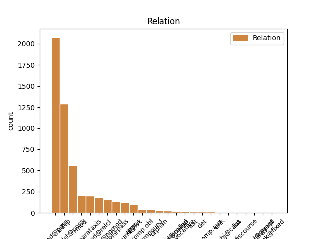
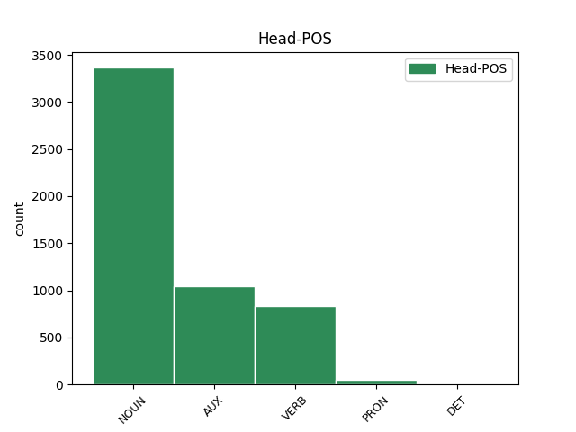
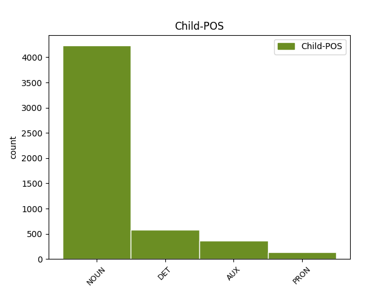

Distribution of features within this leaf



Agreement Rules sorted by frequency.
- When the dependent token is the modifer(mod@poss) of the head token, and the head token is NOUN and the dependent token is NOUN.
1 2016 _ _ _ _ 0 _ _ _
2 թվականի թվական NOUN _ Animacy=Nhum|Case=Dat|Definite=Ind|Number=Sing 3 mod@poss _ LTranslit=t’vakan|Translit=t’vakani
3 հունվարին հունվար NOUN _ Animacy=Nhum|Case=Dat|Definite=Def|Number=Sing 0 _ _ _
4 Մեծ _ _ _ _ 0 _ _ _
5 Սևանի _ _ _ _ 0 _ _ _
6 ծավալը _ _ _ _ 0 _ _ _
7 կազմել _ _ _ _ 0 _ _ _
8 էր _ _ _ _ 0 _ _ _
9 23,83 _ _ _ _ 0 _ _ _
10 մլրդ _ _ _ _ 0 _ _ _
11 խմ _ _ _ _ 0 _ _ _
12 , _ _ _ _ 0 _ _ _
13 իսկ _ _ _ _ 0 _ _ _
14 Փոքր _ _ _ _ 0 _ _ _
15 Սևանինը _ _ _ _ 0 _ _ _
16 ` _ _ _ _ 0 _ _ _
17 13,99 _ _ _ _ 0 _ _ _
18 մլրդ _ _ _ _ 0 _ _ _
19 : _ _ _ _ 0 _ _ _
1 2016 _ _ _ _ 0 _ _ _
2 թվականի _ _ _ _ 0 _ _ _
3 հունվարին _ _ _ _ 0 _ _ _
4 Մեծ _ _ _ _ 0 _ _ _
5 Սևանի _ _ _ _ 0 _ _ _
6 ծավալը _ _ _ _ 0 _ _ _
7 կազմել _ _ _ _ 0 _ _ _
8 էր եմ AUX _ Aspect=Imp|Mood=Ind|Number=Sing|Person=3|Polarity=Pos|Tense=Imp|VerbForm=Fin 0 _ _ _
9 23,83 _ _ _ _ 0 _ _ _
10 մլրդ _ _ _ _ 0 _ _ _
11 խմ խմ NOUN _ Abbr=Yes|Animacy=Nhum|Case=Nom|Definite=Ind|Number=Sing 8 udep _ LTranslit=xm|SpaceAfter=No|Translit=xm
12 , _ _ _ _ 0 _ _ _
13 իսկ _ _ _ _ 0 _ _ _
14 Փոքր _ _ _ _ 0 _ _ _
15 Սևանինը _ _ _ _ 0 _ _ _
16 ` _ _ _ _ 0 _ _ _
17 13,99 _ _ _ _ 0 _ _ _
18 մլրդ _ _ _ _ 0 _ _ _
19 : _ _ _ _ 0 _ _ _
1 Դատելով _ _ _ _ 0 _ _ _
2 Արմեն _ _ _ _ 0 _ _ _
3 Աշոտյանի _ _ _ _ 0 _ _ _
4 հայտարարություններից _ _ _ _ 0 _ _ _
5 ՝ _ _ _ _ 0 _ _ _
6 իրենք _ _ _ _ 0 _ _ _
7 խաղադրույք _ _ _ _ 0 _ _ _
8 են _ _ _ _ 0 _ _ _
9 անում _ _ _ _ 0 _ _ _
10 Կարապետյանի _ _ _ _ 0 _ _ _
11 վրա _ _ _ _ 0 _ _ _
12 ՝ _ _ _ _ 0 _ _ _
13 պայմանով _ _ _ _ 0 _ _ _
14 , _ _ _ _ 0 _ _ _
15 որ _ _ _ _ 0 _ _ _
16 Սերժ _ _ _ _ 0 _ _ _
17 Սարգսյանը _ _ _ _ 0 _ _ _
18 կպահպանի _ _ _ _ 0 _ _ _
19 իր ինքը DET _ Case=Gen|Number=Sing|Person=3|Poss=Yes|PronType=Emp|Reflex=Yes 20 det@poss _ LTranslit=ink’ë|Translit=ir
20 դերը դեր NOUN _ Animacy=Nhum|Case=Nom|Definite=Def|Number=Sing 0 _ _ _
21 : _ _ _ _ 0 _ _ _
1 Մարզերում _ _ _ _ 0 _ _ _
2 ՀՀԿ _ _ _ _ 0 _ _ _
3 օդիոզ _ _ _ _ 0 _ _ _
4 անդամների _ _ _ _ 0 _ _ _
5 ու _ _ _ _ 0 _ _ _
6 ընդդիմության _ _ _ _ 0 _ _ _
7 պարտությունը _ _ _ _ 0 _ _ _
8 ձեռնտու _ _ _ _ 0 _ _ _
9 կլինի լինել VERB _ Aspect=Prosp|Mood=Cnd|Number=Sing|Person=3|Polarity=Pos|Subcat=Intr|Tense=Pres|VerbForm=Fin|Voice=Mid 0 _ _ _
10 ինչպես _ _ _ _ 0 _ _ _
11 Կարեն _ _ _ _ 0 _ _ _
12 Կարապետյանի _ _ _ _ 0 _ _ _
13 թիմին թիմ NOUN _ Animacy=Nhum|Case=Dat|Definite=Def|Number=Sing 9 udep _ LTranslit=t’im|SpaceAfter=No|Translit=t’imin
14 , _ _ _ _ 0 _ _ _
15 այնպես _ _ _ _ 0 _ _ _
16 էլ _ _ _ _ 0 _ _ _
17 Սերժ _ _ _ _ 0 _ _ _
18 Սարգսյանի _ _ _ _ 0 _ _ _
19 « _ _ _ _ 0 _ _ _
20 երիտասարդ _ _ _ _ 0 _ _ _
21 տեխնոկրատներին _ _ _ _ 0 _ _ _
22 » _ _ _ _ 0 _ _ _
23 : _ _ _ _ 0 _ _ _
1 Զուգահեռ _ _ _ _ 0 _ _ _
2 քաղաքականությունից _ _ _ _ 0 _ _ _
3 դուրս _ _ _ _ 0 _ _ _
4 են _ _ _ _ 0 _ _ _
5 մղվում _ _ _ _ 0 _ _ _
6 այնպիսի _ _ _ _ 0 _ _ _
7 վտանգավոր _ _ _ _ 0 _ _ _
8 մրցակիցներ մրցակից NOUN _ Animacy=Hum|Case=Nom|Definite=Ind|Number=Plur 0 _ _ _
9 , _ _ _ _ 0 _ _ _
10 ինչպիսիք _ _ _ _ 0 _ _ _
11 են եմ AUX _ Aspect=Imp|Mood=Ind|Number=Plur|Person=3|Polarity=Pos|Tense=Pres|VerbForm=Fin 8 mod@relcl _ LTranslit=em|Translit=en
12 Հովիկ _ _ _ _ 0 _ _ _
13 Աբրահամյանը _ _ _ _ 0 _ _ _
14 , _ _ _ _ 0 _ _ _
15 Մհեր _ _ _ _ 0 _ _ _
16 Սեդրակյանը _ _ _ _ 0 _ _ _
17 , _ _ _ _ 0 _ _ _
18 Սուրիկ _ _ _ _ 0 _ _ _
19 Խաչատրյանը _ _ _ _ 0 _ _ _
20 , _ _ _ _ 0 _ _ _
21 Գագիկ _ _ _ _ 0 _ _ _
22 Խաչատրյանը _ _ _ _ 0 _ _ _
23 : _ _ _ _ 0 _ _ _
1 Արմեն _ _ _ _ 0 _ _ _
2 Աշոտյանը _ _ _ _ 0 _ _ _
3 , _ _ _ _ 0 _ _ _
4 որը _ _ _ _ 0 _ _ _
5 , _ _ _ _ 0 _ _ _
6 ըստ _ _ _ _ 0 _ _ _
7 մամուլի _ _ _ _ 0 _ _ _
8 , _ _ _ _ 0 _ _ _
9 կարող _ _ _ _ 0 _ _ _
10 է _ _ _ _ 0 _ _ _
11 խորհրդարանի _ _ _ _ 0 _ _ _
12 նախագահ _ _ _ _ 0 _ _ _
13 դառնալ _ _ _ _ 0 _ _ _
14 , _ _ _ _ 0 _ _ _
15 մեկնաբանելով _ _ _ _ 0 _ _ _
16 ՀՀԿ-ի _ _ _ _ 0 _ _ _
17 « _ _ _ _ 0 _ _ _
18 անվտանգություն անվտանգություն NOUN _ Animacy=Nhum|Case=Nom|Definite=Ind|Number=Sing 22 mod _ LTranslit=anvtangowt’yown|Translit=anvtangowt’yown
19 և _ _ _ _ 0 _ _ _
20 առաջընթաց _ _ _ _ 0 _ _ _
21 » _ _ _ _ 0 _ _ _
22 կարգախոսը կարգախոս NOUN _ Animacy=Nhum|Case=Nom|Definite=Def|Number=Sing 0 _ _ _
23 , _ _ _ _ 0 _ _ _
24 ասել _ _ _ _ 0 _ _ _
25 է _ _ _ _ 0 _ _ _
26 , _ _ _ _ 0 _ _ _
27 որ _ _ _ _ 0 _ _ _
28 « _ _ _ _ 0 _ _ _
29 առաջընթացը _ _ _ _ 0 _ _ _
30 » _ _ _ _ 0 _ _ _
31 ապահովելու _ _ _ _ 0 _ _ _
32 է _ _ _ _ 0 _ _ _
33 Կարեն _ _ _ _ 0 _ _ _
34 Կարապետյանի _ _ _ _ 0 _ _ _
35 կառավարությունը _ _ _ _ 0 _ _ _
36 , _ _ _ _ 0 _ _ _
37 իսկ _ _ _ _ 0 _ _ _
38 « _ _ _ _ 0 _ _ _
39 անվտանգության _ _ _ _ 0 _ _ _
40 » _ _ _ _ 0 _ _ _
41 մարմնավորումը _ _ _ _ 0 _ _ _
42 Սերժ _ _ _ _ 0 _ _ _
43 Սարգսյանն _ _ _ _ 0 _ _ _
44 է _ _ _ _ 0 _ _ _
45 : _ _ _ _ 0 _ _ _
1 2017 _ _ _ _ 0 _ _ _
2 թվականի _ _ _ _ 0 _ _ _
3 հունվարին _ _ _ _ 0 _ _ _
4 Արփա _ _ _ _ 0 _ _ _
5 - _ _ _ _ 0 _ _ _
6 Սևան _ _ _ _ 0 _ _ _
7 ջրատարով _ _ _ _ 0 _ _ _
8 Սևանա _ _ _ _ 0 _ _ _
9 լիճ _ _ _ _ 0 _ _ _
10 մուտք _ _ _ _ 0 _ _ _
11 գործած _ _ _ _ 0 _ _ _
12 ջրի _ _ _ _ 0 _ _ _
13 ծավալը _ _ _ _ 0 _ _ _
14 ( _ _ _ _ 0 _ _ _
15 ներառյալ _ _ _ _ 0 _ _ _
16 ջրատարի _ _ _ _ 0 _ _ _
17 հատվածքով հատվածք NOUN _ Animacy=Nhum|Case=Ins|Definite=Ind|Number=Sing 19 mod@npmod _ LTranslit=hatvaçk’|Translit=hatvaçk’ov
18 ստորերկրյա _ _ _ _ 0 _ _ _
19 ներհոսքը ներհոսք NOUN _ Animacy=Nhum|Case=Nom|Definite=Def|Number=Sing 0 _ _ _
20 ) _ _ _ _ 0 _ _ _
21 կազմել _ _ _ _ 0 _ _ _
22 է _ _ _ _ 0 _ _ _
23 2 _ _ _ _ 0 _ _ _
24 մլրդ _ _ _ _ 0 _ _ _
25 630 _ _ _ _ 0 _ _ _
26 մլն _ _ _ _ 0 _ _ _
27 խմ _ _ _ _ 0 _ _ _
28 , _ _ _ _ 0 _ _ _
29 իսկ _ _ _ _ 0 _ _ _
30 2016 _ _ _ _ 0 _ _ _
31 թվականի _ _ _ _ 0 _ _ _
32 հունվարին _ _ _ _ 0 _ _ _
33 այն _ _ _ _ 0 _ _ _
34 կազմել _ _ _ _ 0 _ _ _
35 էր _ _ _ _ 0 _ _ _
36 2 _ _ _ _ 0 _ _ _
37 մլրդ _ _ _ _ 0 _ _ _
38 471 _ _ _ _ 0 _ _ _
39 մլն _ _ _ _ 0 _ _ _
40 խմ _ _ _ _ 0 _ _ _
41 : _ _ _ _ 0 _ _ _
1 Այդ _ _ _ _ 0 _ _ _
2 մեթոդների _ _ _ _ 0 _ _ _
3 դեմ _ _ _ _ 0 _ _ _
4 են եմ AUX _ Aspect=Imp|Mood=Ind|Number=Plur|Person=3|Polarity=Pos|Tense=Pres|VerbForm=Fin 0 _ _ _
5 դրվել _ _ _ _ 0 _ _ _
6 ժամանակակից _ _ _ _ 0 _ _ _
7 քաղտեխնոլոգիաները քաղտեխնոլոգիա NOUN _ Abbr=Yes|Animacy=Nhum|Case=Nom|Definite=Def|Number=Plur 4 subj@pass _ LTranslit=k’aġtexnologia|SpaceAfter=No|Translit=k’aġtexnologianerë
8 , _ _ _ _ 0 _ _ _
9 և _ _ _ _ 0 _ _ _
10 կհաղթի _ _ _ _ 0 _ _ _
11 նա _ _ _ _ 0 _ _ _
12 , _ _ _ _ 0 _ _ _
13 ով _ _ _ _ 0 _ _ _
14 գումար _ _ _ _ 0 _ _ _
15 չի _ _ _ _ 0 _ _ _
16 խնայի _ _ _ _ 0 _ _ _
17 : _ _ _ _ 0 _ _ _
1 Օրինակ _ _ _ _ 0 _ _ _
2 , _ _ _ _ 0 _ _ _
3 « _ _ _ _ 0 _ _ _
4 դրական _ _ _ _ 0 _ _ _
5 սպասումների _ _ _ _ 0 _ _ _
6 » _ _ _ _ 0 _ _ _
7 ձևավորումը ձևավորում NOUN _ Animacy=Nhum|Case=Nom|Definite=Def|Number=Sing 0 _ _ _
8 ՝ _ _ _ _ 0 _ _ _
9 վարչապետի _ _ _ _ 0 _ _ _
10 Վրաստան _ _ _ _ 0 _ _ _
11 այցը այց NOUN _ Animacy=Nhum|Case=Nom|Definite=Def|Number=Sing 7 appos _ LTranslit=ayc’|Translit=ayc’ë
12 և _ _ _ _ 0 _ _ _
13 « _ _ _ _ 0 _ _ _
14 Լարսին _ _ _ _ 0 _ _ _
15 այլընտրանքի _ _ _ _ 0 _ _ _
16 » _ _ _ _ 0 _ _ _
17 խոստումը _ _ _ _ 0 _ _ _
18 , _ _ _ _ 0 _ _ _
19 միլիարդների _ _ _ _ 0 _ _ _
20 ներդրումների _ _ _ _ 0 _ _ _
21 խոստումը _ _ _ _ 0 _ _ _
22 , _ _ _ _ 0 _ _ _
23 նախարարներին _ _ _ _ 0 _ _ _
24 հարյուրավոր _ _ _ _ 0 _ _ _
25 հանձնարարականները _ _ _ _ 0 _ _ _
26 : _ _ _ _ 0 _ _ _
1 - _ _ _ _ 0 _ _ _
2 Իրանը _ _ _ _ 0 _ _ _
3 փորձում _ _ _ _ 0 _ _ _
4 է _ _ _ _ 0 _ _ _
5 մշակել _ _ _ _ 0 _ _ _
6 կոնկրետ _ _ _ _ 0 _ _ _
7 գործողություններ _ _ _ _ 0 _ _ _
8 , _ _ _ _ 0 _ _ _
9 որոնք _ _ _ _ 0 _ _ _
10 ուղղված _ _ _ _ 0 _ _ _
11 են _ _ _ _ 0 _ _ _
12 կարգավորման _ _ _ _ 0 _ _ _
13 գործընթացի _ _ _ _ 0 _ _ _
14 խափանմանը _ _ _ _ 0 _ _ _
15 , _ _ _ _ 0 _ _ _
16 ուշադիր _ _ _ _ 0 _ _ _
17 հետևում _ _ _ _ 0 _ _ _
18 է _ _ _ _ 0 _ _ _
19 իրադարձություններին _ _ _ _ 0 _ _ _
20 և _ _ _ _ 0 _ _ _
21 խորհրդակցությունների _ _ _ _ 0 _ _ _
22 կարիք կարիք NOUN _ Animacy=Nhum|Case=Nom|Definite=Ind|Number=Sing 23 compound@lvc _ LTranslit=karik’|Translit=karik’
23 ունի ունեմ VERB _ Aspect=Imp|Mood=Ind|Number=Sing|Person=3|Polarity=Pos|Subcat=Tran|Tense=Pres|VerbForm=Fin|Voice=Act 0 _ _ _
24 : _ _ _ _ 0 _ _ _
1 Մյուս _ _ _ _ 0 _ _ _
2 դեպքերում _ _ _ _ 0 _ _ _
3 « _ _ _ _ 0 _ _ _
4 մրցապայքարը _ _ _ _ 0 _ _ _
5 » _ _ _ _ 0 _ _ _
6 կարծում _ _ _ _ 0 _ _ _
7 եմ եմ AUX _ Aspect=Imp|Mood=Ind|Number=Sing|Person=1|Polarity=Pos|Tense=Pres|VerbForm=Fin 12 parataxis _ LTranslit=em|Translit=em
8 հերթական _ _ _ _ 0 _ _ _
9 անտաղանդ _ _ _ _ 0 _ _ _
10 մարիոնետային _ _ _ _ 0 _ _ _
11 բեմադրությունը _ _ _ _ 0 _ _ _
12 կլինի լինել AUX _ Aspect=Prosp|Mood=Cnd|Number=Sing|Person=3|Polarity=Pos|Tense=Pres|VerbForm=Fin 0 _ _ _
13 : _ _ _ _ 0 _ _ _
1 Նրան _ _ _ _ 0 _ _ _
2 կարող _ _ _ _ 0 _ _ _
3 են _ _ _ _ 0 _ _ _
4 ազատազրկել _ _ _ _ 0 _ _ _
5 , _ _ _ _ 0 _ _ _
6 գնդակահարել _ _ _ _ 0 _ _ _
7 , _ _ _ _ 0 _ _ _
8 տեղափոխել _ _ _ _ 0 _ _ _
9 ԵԱՏՄ _ _ _ _ 0 _ _ _
10 անդամ անդամ NOUN _ Animacy=Nhum|Case=Nom|Definite=Ind|Number=Sing 12 compound _ LTranslit=andam|Translit=andam
11 այլ _ _ _ _ 0 _ _ _
12 երկրի երկիր NOUN _ Animacy=Nhum|Case=Dat|Definite=Ind|Number=Sing 0 _ _ _
13 բանտ _ _ _ _ 0 _ _ _
14 , _ _ _ _ 0 _ _ _
15 չէ _ _ _ _ 0 _ _ _
16 ՞ _ _ _ _ 0 _ _ _
17 որ _ _ _ _ 0 _ _ _
18 մենք _ _ _ _ 0 _ _ _
19 հիմա _ _ _ _ 0 _ _ _
20 մեկ _ _ _ _ 0 _ _ _
21 ընդհանուր _ _ _ _ 0 _ _ _
22 բանտ _ _ _ _ 0 _ _ _
23 ունենք _ _ _ _ 0 _ _ _
24 : _ _ _ _ 0 _ _ _
1 Սատանան _ _ _ _ 0 _ _ _
2 անպատասխան _ _ _ _ 0 _ _ _
3 ժպտում _ _ _ _ 0 _ _ _
4 էր _ _ _ _ 0 _ _ _
5 , _ _ _ _ 0 _ _ _
6 և _ _ _ _ 0 _ _ _
7 այդ _ _ _ _ 0 _ _ _
8 ժպիտը _ _ _ _ 0 _ _ _
9 որոշակի _ _ _ _ 0 _ _ _
10 եզր _ _ _ _ 0 _ _ _
11 չուներ ունեմ VERB _ Aspect=Imp|Mood=Ind|Number=Sing|Person=3|Polarity=Neg|Subcat=Tran|Tense=Imp|VerbForm=Fin|Voice=Act 0 _ _ _
12 և _ _ _ _ 0 _ _ _
13 ուղղություն _ _ _ _ 0 _ _ _
14 չուներ _ _ _ _ 0 _ _ _
15 . _ _ _ _ 0 _ _ _
16 այն _ _ _ _ 0 _ _ _
17 հարափոփոխ _ _ _ _ 0 _ _ _
18 ձևերով _ _ _ _ 0 _ _ _
19 փափուկ _ _ _ _ 0 _ _ _
20 ու _ _ _ _ 0 _ _ _
21 դանդաղ _ _ _ _ 0 _ _ _
22 կոլոլվում _ _ _ _ 0 _ _ _
23 էր եմ AUX _ Aspect=Imp|Mood=Ind|Number=Sing|Person=3|Polarity=Pos|Tense=Imp|VerbForm=Fin 11 parataxis _ LTranslit=em|SpaceAfter=No|Translit=ēr
24 , _ _ _ _ 0 _ _ _
25 իր _ _ _ _ 0 _ _ _
26 մեջ _ _ _ _ 0 _ _ _
27 առնում _ _ _ _ 0 _ _ _
28 ամեն _ _ _ _ 0 _ _ _
29 ինչ _ _ _ _ 0 _ _ _
30 և _ _ _ _ 0 _ _ _
31 էլի _ _ _ _ 0 _ _ _
32 գնում _ _ _ _ 0 _ _ _
33 , _ _ _ _ 0 _ _ _
34 անընդհատ _ _ _ _ 0 _ _ _
35 գնում _ _ _ _ 0 _ _ _
36 , _ _ _ _ 0 _ _ _
37 անտարբեր _ _ _ _ 0 _ _ _
38 ու _ _ _ _ 0 _ _ _
39 սովորական _ _ _ _ 0 _ _ _
40 դարձնում _ _ _ _ 0 _ _ _
41 ամեն _ _ _ _ 0 _ _ _
42 ինչ _ _ _ _ 0 _ _ _
43 , _ _ _ _ 0 _ _ _
44 աննշան _ _ _ _ 0 _ _ _
45 ու _ _ _ _ 0 _ _ _
46 անիմաստ _ _ _ _ 0 _ _ _
47 դարձնում _ _ _ _ 0 _ _ _
48 ամեն _ _ _ _ 0 _ _ _
49 ինչ _ _ _ _ 0 _ _ _
50 ՝ _ _ _ _ 0 _ _ _
51 և _ _ _ _ 0 _ _ _
52 ՛ _ _ _ _ 0 _ _ _
53 ժամանակը _ _ _ _ 0 _ _ _
54 , _ _ _ _ 0 _ _ _
55 և _ _ _ _ 0 _ _ _
56 ՛ _ _ _ _ 0 _ _ _
57 լույսը _ _ _ _ 0 _ _ _
58 , _ _ _ _ 0 _ _ _
59 և _ _ _ _ 0 _ _ _
60 ՛ _ _ _ _ 0 _ _ _
61 իրերի _ _ _ _ 0 _ _ _
62 չափուկշռույթը _ _ _ _ 0 _ _ _
63 , _ _ _ _ 0 _ _ _
64 և _ _ _ _ 0 _ _ _
65 իրողությունների _ _ _ _ 0 _ _ _
66 չափանիշները _ _ _ _ 0 _ _ _
67 ... _ _ _ _ 0 _ _ _
1 - _ _ _ _ 0 _ _ _
2 Իրանցիները _ _ _ _ 0 _ _ _
3 մեծ _ _ _ _ 0 _ _ _
4 մտահոգություն _ _ _ _ 0 _ _ _
5 ունեն _ _ _ _ 0 _ _ _
6 , _ _ _ _ 0 _ _ _
7 որ _ _ _ _ 0 _ _ _
8 հայ _ _ _ _ 0 _ _ _
9 հանրությանը _ _ _ _ 0 _ _ _
10 կպարտադրվի պարտադրել VERB _ Aspect=Prosp|Mood=Cnd|Number=Sing|Person=3|Polarity=Pos|Subcat=Intr|Tense=Pres|VerbForm=Fin|Voice=Pass 0 _ _ _
11 Հարթավայրային _ _ _ _ 0 _ _ _
12 Ղարաբաղի _ _ _ _ 0 _ _ _
13 ու _ _ _ _ 0 _ _ _
14 ընդհանրապես _ _ _ _ 0 _ _ _
15 ղարաբաղյան _ _ _ _ 0 _ _ _
16 խնդրի _ _ _ _ 0 _ _ _
17 վերաբերյալ _ _ _ _ 0 _ _ _
18 Իրանի _ _ _ _ 0 _ _ _
19 դիրքորոշման _ _ _ _ 0 _ _ _
20 փոփոխության _ _ _ _ 0 _ _ _
21 մասին _ _ _ _ 0 _ _ _
22 կարծիքը կարծիք NOUN _ Animacy=Nhum|Case=Nom|Definite=Def|Number=Sing 10 subj@pass _ LTranslit=karçik’|SpaceAfter=No|Translit=karçik’ë
23 , _ _ _ _ 0 _ _ _
24 տվյալ _ _ _ _ 0 _ _ _
25 կարծիքը _ _ _ _ 0 _ _ _
26 դիտարկելով _ _ _ _ 0 _ _ _
27 որպես _ _ _ _ 0 _ _ _
28 Հայաստանի _ _ _ _ 0 _ _ _
29 վրա _ _ _ _ 0 _ _ _
30 ազդեցության _ _ _ _ 0 _ _ _
31 գործոն _ _ _ _ 0 _ _ _
32 : _ _ _ _ 0 _ _ _
1 Այս _ _ _ _ 0 _ _ _
2 տեսանկյունից տեսանկյուն NOUN _ Animacy=Nhum|Case=Abl|Definite=Ind|Number=Sing 9 parataxis _ LTranslit=tesankyown|SpaceAfter=No|Translit=tesankyownic’
3 , _ _ _ _ 0 _ _ _
4 իհարկե _ _ _ _ 0 _ _ _
5 , _ _ _ _ 0 _ _ _
6 նոր _ _ _ _ 0 _ _ _
7 նախարարը _ _ _ _ 0 _ _ _
8 իրավացի _ _ _ _ 0 _ _ _
9 է եմ AUX _ Aspect=Imp|Mood=Ind|Number=Sing|Person=3|Polarity=Pos|Tense=Pres|VerbForm=Fin 0 _ _ _
10 : _ _ _ _ 0 _ _ _
1 Նախ _ _ _ _ 0 _ _ _
2 , _ _ _ _ 0 _ _ _
3 դրանից դա PRON _ Case=Abl|Distance=Med|Number=Sing|PronType=Dem 4 udep _ LTranslit=da|Translit=dranic’
4 է եմ AUX _ Aspect=Imp|Mood=Ind|Number=Sing|Person=3|Polarity=Pos|Tense=Pres|VerbForm=Fin 0 _ _ _
5 կախված _ _ _ _ 0 _ _ _
6 Իրանի _ _ _ _ 0 _ _ _
7 անվտանգությունը _ _ _ _ 0 _ _ _
8 , _ _ _ _ 0 _ _ _
9 Իրանն _ _ _ _ 0 _ _ _
10 իր _ _ _ _ 0 _ _ _
11 տարածաշրջանային _ _ _ _ 0 _ _ _
12 դիրքերը _ _ _ _ 0 _ _ _
13 կառուցելու _ _ _ _ 0 _ _ _
14 համար _ _ _ _ 0 _ _ _
15 շատ _ _ _ _ 0 _ _ _
16 ժամանակ _ _ _ _ 0 _ _ _
17 ու _ _ _ _ 0 _ _ _
18 ռեսուրսներ _ _ _ _ 0 _ _ _
19 է _ _ _ _ 0 _ _ _
20 ծախսել _ _ _ _ 0 _ _ _
21 : _ _ _ _ 0 _ _ _
1 Ինքը _ _ _ _ 0 _ _ _
2 փախել _ _ _ _ 0 _ _ _
3 , _ _ _ _ 0 _ _ _
4 մտել _ _ _ _ 0 _ _ _
5 էր _ _ _ _ 0 _ _ _
6 գոմը _ _ _ _ 0 _ _ _
7 ՝ _ _ _ _ 0 _ _ _
8 մորն _ _ _ _ 0 _ _ _
9 ու _ _ _ _ 0 _ _ _
10 իր _ _ _ _ 0 _ _ _
11 վիժածը _ _ _ _ 0 _ _ _
12 երես երես NOUN _ Animacy=Nhum|Case=Nom|Definite=Ind|Number=Sing 0 _ _ _
13 - _ _ _ _ 0 _ _ _
14 երեսի երես NOUN _ Animacy=Nhum|Case=Dat|Definite=Ind|Number=Sing 12 compound@redup _ LTranslit=eres|Translit=eresi
15 թողած _ _ _ _ 0 _ _ _
16 ... _ _ _ _ 0 _ _ _
1 Ապա _ _ _ _ 0 _ _ _
2 նա _ _ _ _ 0 _ _ _
3 վառ _ _ _ _ 0 _ _ _
4 ներկայացուցիչն _ _ _ _ 0 _ _ _
5 է _ _ _ _ 0 _ _ _
6 բիթնիկների _ _ _ _ 0 _ _ _
7 մշակույթի _ _ _ _ 0 _ _ _
8 , _ _ _ _ 0 _ _ _
9 որը _ _ _ _ 0 _ _ _
10 ցնցեց _ _ _ _ 0 _ _ _
11 սպառողական _ _ _ _ 0 _ _ _
12 հասարակությունը _ _ _ _ 0 _ _ _
13 , _ _ _ _ 0 _ _ _
14 որտեղ _ _ _ _ 0 _ _ _
15 պատերազմի _ _ _ _ 0 _ _ _
16 օրերին _ _ _ _ 0 _ _ _
17 իշխող _ _ _ _ 0 _ _ _
18 է _ _ _ _ 0 _ _ _
19 դառնում _ _ _ _ 0 _ _ _
20 ռազմա _ _ _ _ 0 _ _ _
21 - _ _ _ _ 0 _ _ _
22 հայրենասիրական _ _ _ _ 0 _ _ _
23 հիստերիան _ _ _ _ 0 _ _ _
24 , _ _ _ _ 0 _ _ _
25 իսկ _ _ _ _ 0 _ _ _
26 խաղաղ _ _ _ _ 0 _ _ _
27 ժամանակ ժամանակ NOUN _ Animacy=Nhum|Case=Nom|Definite=Ind|Number=Sing 28 orphan _ LTranslit=žamanak|Translit=žamanak
28 գորշությունը գորշություն NOUN _ Animacy=Nhum|Case=Nom|Definite=Def|Number=Sing 0 _ _ _
29 ՝ _ _ _ _ 0 _ _ _
30 իր _ _ _ _ 0 _ _ _
31 50 _ _ _ _ 0 _ _ _
32 երանգներով _ _ _ _ 0 _ _ _
33 ։ _ _ _ _ 0 _ _ _
1 Ծանոթ _ _ _ _ 0 _ _ _
2 է _ _ _ _ 0 _ _ _
3 , _ _ _ _ 0 _ _ _
4 հեշտ _ _ _ _ 0 _ _ _
5 է _ _ _ _ 0 _ _ _
6 , _ _ _ _ 0 _ _ _
7 ուղղված _ _ _ _ 0 _ _ _
8 է _ _ _ _ 0 _ _ _
9 այնպիսի _ _ _ _ 0 _ _ _
10 զգացմունքներ _ _ _ _ 0 _ _ _
11 հարուցելուն _ _ _ _ 0 _ _ _
12 , _ _ _ _ 0 _ _ _
13 որոնք որ PRON _ Case=Nom|Number=Plur|PronType=Rel 21 subj@pass _ LTranslit=or|Translit=oronk’
14 բազմիցս _ _ _ _ 0 _ _ _
15 ու _ _ _ _ 0 _ _ _
16 զանգվածաբար _ _ _ _ 0 _ _ _
17 նույն _ _ _ _ 0 _ _ _
18 եղանակներով _ _ _ _ 0 _ _ _
19 ի _ _ _ _ 0 _ _ _
20 հայտ _ _ _ _ 0 _ _ _
21 են եմ AUX _ Aspect=Imp|Mood=Ind|Number=Plur|Person=3|Polarity=Pos|Tense=Pres|VerbForm=Fin 0 _ _ _
22 բերվել _ _ _ _ 0 _ _ _
23 , _ _ _ _ 0 _ _ _
24 ուրիշների _ _ _ _ 0 _ _ _
25 կողմից _ _ _ _ 0 _ _ _
26 ։ _ _ _ _ 0 _ _ _
1 Վարչապետը _ _ _ _ 0 _ _ _
2 նաև _ _ _ _ 0 _ _ _
3 ՀՀ _ _ _ _ 0 _ _ _
4 էներգետիկ _ _ _ _ 0 _ _ _
5 ենթակառուցվածքների _ _ _ _ 0 _ _ _
6 և _ _ _ _ 0 _ _ _
7 բնական _ _ _ _ 0 _ _ _
8 պաշարների _ _ _ _ 0 _ _ _
9 նախարարին նախարար NOUN _ Animacy=Hum|Case=Dat|Definite=Def|Number=Sing 10 comp:obl _ LTranslit=naxarar|Translit=naxararin
10 հանձնարարեց հանձնարարել VERB _ Aspect=Perf|Mood=Ind|Number=Sing|Person=3|Polarity=Pos|Subcat=Tran|Tense=Past|VerbForm=Fin|Voice=Act 0 _ _ _
11 երկամսյա _ _ _ _ 0 _ _ _
12 ժամկետում _ _ _ _ 0 _ _ _
13 համագործակցելով _ _ _ _ 0 _ _ _
14 գյուղատնտեսության _ _ _ _ 0 _ _ _
15 , _ _ _ _ 0 _ _ _
16 բնապահպանության _ _ _ _ 0 _ _ _
17 նախարարությունների _ _ _ _ 0 _ _ _
18 , _ _ _ _ 0 _ _ _
19 ինչպես _ _ _ _ 0 _ _ _
20 նաև _ _ _ _ 0 _ _ _
21 Պետական _ _ _ _ 0 _ _ _
22 եկամուտների _ _ _ _ 0 _ _ _
23 կոմիտեի _ _ _ _ 0 _ _ _
24 և _ _ _ _ 0 _ _ _
25 Հանրային _ _ _ _ 0 _ _ _
26 ծառայությունները _ _ _ _ 0 _ _ _
27 կարգավորող _ _ _ _ 0 _ _ _
28 հանձնաժողովի _ _ _ _ 0 _ _ _
29 հետ _ _ _ _ 0 _ _ _
30 ՝ _ _ _ _ 0 _ _ _
31 մշակել _ _ _ _ 0 _ _ _
32 լրացուցիչ _ _ _ _ 0 _ _ _
33 խթանման _ _ _ _ 0 _ _ _
34 գործիքներ _ _ _ _ 0 _ _ _
35 ոռոգման _ _ _ _ 0 _ _ _
36 համակարգերի _ _ _ _ 0 _ _ _
37 և _ _ _ _ 0 _ _ _
38 խմելու _ _ _ _ 0 _ _ _
39 ջրի _ _ _ _ 0 _ _ _
40 ջրատարների _ _ _ _ 0 _ _ _
41 վրա _ _ _ _ 0 _ _ _
42 ՀԷԿ-երի _ _ _ _ 0 _ _ _
43 կառուցման _ _ _ _ 0 _ _ _
44 համար _ _ _ _ 0 _ _ _
45 : _ _ _ _ 0 _ _ _
1 Ինչ _ _ _ _ 0 _ _ _
2 վերաբերում _ _ _ _ 0 _ _ _
3 է եմ AUX _ Aspect=Imp|Mood=Ind|Number=Sing|Person=3|Polarity=Pos|Tense=Pres|VerbForm=Fin 12 mod _ LTranslit=em|Translit=ē
4 Բոբ _ _ _ _ 0 _ _ _
5 Դիլանին _ _ _ _ 0 _ _ _
6 , _ _ _ _ 0 _ _ _
7 կարծում _ _ _ _ 0 _ _ _
8 եմ _ _ _ _ 0 _ _ _
9 , _ _ _ _ 0 _ _ _
10 նա _ _ _ _ 0 _ _ _
11 արժանի _ _ _ _ 0 _ _ _
12 է եմ AUX _ Aspect=Imp|Mood=Ind|Number=Sing|Person=3|Polarity=Pos|Tense=Pres|VerbForm=Fin 0 _ _ _
13 այս _ _ _ _ 0 _ _ _
14 մրցանակին _ _ _ _ 0 _ _ _
15 նախ _ _ _ _ 0 _ _ _
16 երգի _ _ _ _ 0 _ _ _
17 խոսքերի _ _ _ _ 0 _ _ _
18 կարգավիճակը _ _ _ _ 0 _ _ _
19 երաժշտության _ _ _ _ 0 _ _ _
20 պարզունակ _ _ _ _ 0 _ _ _
21 կցորդից _ _ _ _ 0 _ _ _
22 պոեզիայի _ _ _ _ 0 _ _ _
23 մակարդակի _ _ _ _ 0 _ _ _
24 բարձրացնելու _ _ _ _ 0 _ _ _
25 համար _ _ _ _ 0 _ _ _
26 ։ _ _ _ _ 0 _ _ _
1 « _ _ _ _ 0 _ _ _
2 Ասա _ _ _ _ 0 _ _ _
3 , _ _ _ _ 0 _ _ _
4 ինչ _ _ _ _ 0 _ _ _
5 ՞ _ _ _ _ 0 _ _ _
6 ես _ _ _ _ 0 _ _ _
7 ուզում _ _ _ _ 0 _ _ _
8 » _ _ _ _ 0 _ _ _
9 , _ _ _ _ 0 _ _ _
10 — _ _ _ _ 0 _ _ _
11 հարցրեց _ _ _ _ 0 _ _ _
12 Եսային _ _ _ _ 0 _ _ _
13 և _ _ _ _ 0 _ _ _
14 սպասում _ _ _ _ 0 _ _ _
15 էր _ _ _ _ 0 _ _ _
16 , _ _ _ _ 0 _ _ _
17 որ _ _ _ _ 0 _ _ _
18 Սատանան _ _ _ _ 0 _ _ _
19 կասի ասել VERB _ Aspect=Prosp|Mood=Cnd|Number=Sing|Person=3|Polarity=Pos|Subcat=Tran|Tense=Pres|VerbForm=Fin|Voice=Act 0 _ _ _
20 ՝ _ _ _ _ 0 _ _ _
21 « _ _ _ _ 0 _ _ _
22 Քո _ _ _ _ 0 _ _ _
23 մահը մահ NOUN _ Animacy=Nhum|Case=Nom|Definite=Def|Number=Sing 19 parataxis _ LTranslit=mah|SpaceAfter=No|Translit=mahë
24 , _ _ _ _ 0 _ _ _
25 քո _ _ _ _ 0 _ _ _
26 վերջը _ _ _ _ 0 _ _ _
27 , _ _ _ _ 0 _ _ _
28 քո _ _ _ _ 0 _ _ _
29 տառապանքը _ _ _ _ 0 _ _ _
30 , _ _ _ _ 0 _ _ _
31 քո _ _ _ _ 0 _ _ _
32 պարտությունը _ _ _ _ 0 _ _ _
33 » _ _ _ _ 0 _ _ _
34 ։ _ _ _ _ 0 _ _ _
1 Օրինակ օրինակ NOUN _ Animacy=Nhum|Case=Nom|Definite=Ind|Number=Sing 7 parataxis _ LTranslit=òrinak|SpaceAfter=No|Translit=Òrinak
2 , _ _ _ _ 0 _ _ _
3 « _ _ _ _ 0 _ _ _
4 դրական _ _ _ _ 0 _ _ _
5 սպասումների _ _ _ _ 0 _ _ _
6 » _ _ _ _ 0 _ _ _
7 ձևավորումը ձևավորում NOUN _ Animacy=Nhum|Case=Nom|Definite=Def|Number=Sing 0 _ _ _
8 ՝ _ _ _ _ 0 _ _ _
9 վարչապետի _ _ _ _ 0 _ _ _
10 Վրաստան _ _ _ _ 0 _ _ _
11 այցը _ _ _ _ 0 _ _ _
12 և _ _ _ _ 0 _ _ _
13 « _ _ _ _ 0 _ _ _
14 Լարսին _ _ _ _ 0 _ _ _
15 այլընտրանքի _ _ _ _ 0 _ _ _
16 » _ _ _ _ 0 _ _ _
17 խոստումը _ _ _ _ 0 _ _ _
18 , _ _ _ _ 0 _ _ _
19 միլիարդների _ _ _ _ 0 _ _ _
20 ներդրումների _ _ _ _ 0 _ _ _
21 խոստումը _ _ _ _ 0 _ _ _
22 , _ _ _ _ 0 _ _ _
23 նախարարներին _ _ _ _ 0 _ _ _
24 հարյուրավոր _ _ _ _ 0 _ _ _
25 հանձնարարականները _ _ _ _ 0 _ _ _
26 : _ _ _ _ 0 _ _ _
1 Այդ _ _ _ _ 0 _ _ _
2 մեթոդների _ _ _ _ 0 _ _ _
3 դեմ _ _ _ _ 0 _ _ _
4 են _ _ _ _ 0 _ _ _
5 դրվել _ _ _ _ 0 _ _ _
6 ժամանակակից _ _ _ _ 0 _ _ _
7 քաղտեխնոլոգիաները _ _ _ _ 0 _ _ _
8 , _ _ _ _ 0 _ _ _
9 և _ _ _ _ 0 _ _ _
10 կհաղթի _ _ _ _ 0 _ _ _
11 նա նա PRON _ Case=Nom|Number=Sing|Person=3|PronType=Prs 0 _ _ _
12 , _ _ _ _ 0 _ _ _
13 ով _ _ _ _ 0 _ _ _
14 գումար _ _ _ _ 0 _ _ _
15 չի եմ AUX _ Aspect=Imp|Mood=Ind|Number=Sing|Person=3|Polarity=Neg|Tense=Pres|VerbForm=Fin 11 mod@relcl _ LTranslit=em|Translit=či
16 խնայի _ _ _ _ 0 _ _ _
17 : _ _ _ _ 0 _ _ _
1 Ինքն _ _ _ _ 0 _ _ _
2 էլ _ _ _ _ 0 _ _ _
3 համաձայն _ _ _ _ 0 _ _ _
4 էր _ _ _ _ 0 _ _ _
5 . _ _ _ _ 0 _ _ _
6 « _ _ _ _ 0 _ _ _
7 Էրեխու _ _ _ _ 0 _ _ _
8 զորությունն _ _ _ _ 0 _ _ _
9 ինչ _ _ _ _ 0 _ _ _
10 ՞ _ _ _ _ 0 _ _ _
11 ա _ _ _ _ 0 _ _ _
12 , _ _ _ _ 0 _ _ _
13 ձեռդ _ _ _ _ 0 _ _ _
14 սեղմեցիր սեղմել VERB _ Aspect=Perf|Mood=Ind|Number=Sing|Person=2|Polarity=Pos|Subcat=Tran|Tense=Past|VerbForm=Fin|Voice=Act 0 _ _ _
15 քիթբերնին _ _ _ _ 0 _ _ _
16 ՝ _ _ _ _ 0 _ _ _
17 խեղդված _ _ _ _ 0 _ _ _
18 ա եմ AUX _ Aspect=Imp|Mood=Ind|Number=Sing|Person=3|Polarity=Pos|Style=Coll|Tense=Pres|VerbForm=Fin 14 mod _ LTranslit=em|SpaceAfter=No|Translit=a
19 » _ _ _ _ 0 _ _ _
20 ։ _ _ _ _ 0 _ _ _
1 Մենք մենք PRON _ Case=Nom|Number=Plur|Person=1|PronType=Prs 0 _ _ _
2 ՝ _ _ _ _ 0 _ _ _
3 խորհրդային _ _ _ _ 0 _ _ _
4 կայսրության _ _ _ _ 0 _ _ _
5 փլուզման _ _ _ _ 0 _ _ _
6 վկաներս վկա NOUN _ Animacy=Hum|Case=Nom|Number=Plur|Person[psor]=1 1 appos _ LTranslit=vka|Translit=vkaners
7 ու _ _ _ _ 0 _ _ _
8 մասնակիցներս _ _ _ _ 0 _ _ _
9 , _ _ _ _ 0 _ _ _
10 խորտակվող _ _ _ _ 0 _ _ _
11 կայսրությունից _ _ _ _ 0 _ _ _
12 պահանջում _ _ _ _ 0 _ _ _
13 էինք _ _ _ _ 0 _ _ _
14 վերադարձնել _ _ _ _ 0 _ _ _
15 մեր _ _ _ _ 0 _ _ _
16 երկրի _ _ _ _ 0 _ _ _
17 հանդեպ _ _ _ _ 0 _ _ _
18 գործած _ _ _ _ 0 _ _ _
19 անարդարությունները _ _ _ _ 0 _ _ _
20 ։ _ _ _ _ 0 _ _ _
1 Ինչ _ _ _ _ 0 _ _ _
2 - _ _ _ _ 0 _ _ _
3 որ _ _ _ _ 0 _ _ _
4 բանը _ _ _ _ 0 _ _ _
5 , _ _ _ _ 0 _ _ _
6 որ _ _ _ _ 0 _ _ _
7 մեզ _ _ _ _ 0 _ _ _
8 ստիպում _ _ _ _ 0 _ _ _
9 էր _ _ _ _ 0 _ _ _
10 այդպես _ _ _ _ 0 _ _ _
11 զգալ _ _ _ _ 0 _ _ _
12 , _ _ _ _ 0 _ _ _
13 որ _ _ _ _ 0 _ _ _
14 պիտի _ _ _ _ 0 _ _ _
15 ստիպեր _ _ _ _ 0 _ _ _
16 այդպես _ _ _ _ 0 _ _ _
17 մտածել _ _ _ _ 0 _ _ _
18 և _ _ _ _ 0 _ _ _
19 նրանց _ _ _ _ 0 _ _ _
20 առաջին _ _ _ _ 0 _ _ _
21 անգամ _ _ _ _ 0 _ _ _
22 տեսնողին _ _ _ _ 0 _ _ _
23 , _ _ _ _ 0 _ _ _
24 ինչ _ _ _ _ 0 _ _ _
25 - _ _ _ _ 0 _ _ _
26 որ _ _ _ _ 0 _ _ _
27 բանը բան NOUN _ Animacy=Nhum|Case=Nom|Definite=Def|Number=Sing 30 dislocated _ LTranslit=ban|Translit=banë
28 մեր _ _ _ _ 0 _ _ _
29 մեջ _ _ _ _ 0 _ _ _
30 չէր եմ AUX _ Aspect=Imp|Mood=Ind|Number=Sing|Person=3|Polarity=Neg|Tense=Imp|VerbForm=Fin 0 _ _ _
31 , _ _ _ _ 0 _ _ _
32 այլ _ _ _ _ 0 _ _ _
33 նրանց _ _ _ _ 0 _ _ _
34 ։ _ _ _ _ 0 _ _ _
1 Կարելի _ _ _ _ 0 _ _ _
2 է _ _ _ _ 0 _ _ _
3 հեռու _ _ _ _ 0 _ _ _
4 չգնալ _ _ _ _ 0 _ _ _
5 ու _ _ _ _ 0 _ _ _
6 հիշել _ _ _ _ 0 _ _ _
7 « _ _ _ _ 0 _ _ _
8 Լարովի _ _ _ _ 0 _ _ _
9 Թռչնի _ _ _ _ 0 _ _ _
10 ժամանակագրությունը _ _ _ _ 0 _ _ _
11 » _ _ _ _ 0 _ _ _
12 վեպը _ _ _ _ 0 _ _ _
13 ( _ _ _ _ 0 _ _ _
14 1994 _ _ _ _ 0 _ _ _
15 ) _ _ _ _ 0 _ _ _
16 , _ _ _ _ 0 _ _ _
17 որի _ _ _ _ 0 _ _ _
18 վերնագիրն _ _ _ _ 0 _ _ _
19 իհարկե _ _ _ _ 0 _ _ _
20 ավելի _ _ _ _ 0 _ _ _
21 լավն _ _ _ _ 0 _ _ _
22 է _ _ _ _ 0 _ _ _
23 , _ _ _ _ 0 _ _ _
24 քան _ _ _ _ 0 _ _ _
25 « _ _ _ _ 0 _ _ _
26 Լսիր _ _ _ _ 0 _ _ _
27 քամու _ _ _ _ 0 _ _ _
28 երգը _ _ _ _ 0 _ _ _
29 » _ _ _ _ 0 _ _ _
30 տափակությունը _ _ _ _ 0 _ _ _
31 ( _ _ _ _ 0 _ _ _
32 Հարուկիի _ _ _ _ 0 _ _ _
33 առաջին _ _ _ _ 0 _ _ _
34 վիպակը _ _ _ _ 0 _ _ _
35 , _ _ _ _ 0 _ _ _
36 որը _ _ _ _ 0 _ _ _
37 գրելու _ _ _ _ 0 _ _ _
38 և _ _ _ _ 0 _ _ _
39 առհասարակ _ _ _ _ 0 _ _ _
40 գրականությամբ _ _ _ _ 0 _ _ _
41 զբաղվելու _ _ _ _ 0 _ _ _
42 անհրաժեշտությունը _ _ _ _ 0 _ _ _
43 նա _ _ _ _ 0 _ _ _
44 հասկացել _ _ _ _ 0 _ _ _
45 է _ _ _ _ 0 _ _ _
46 բեյսբոլի _ _ _ _ 0 _ _ _
47 մի _ _ _ _ 0 _ _ _
48 խաղ _ _ _ _ 0 _ _ _
49 նայելուց _ _ _ _ 0 _ _ _
50 ) _ _ _ _ 0 _ _ _
51 , _ _ _ _ 0 _ _ _
52 բայց _ _ _ _ 0 _ _ _
53 ակնհայտ _ _ _ _ 0 _ _ _
54 նմանօրինակումն նմանօրինակում NOUN _ Animacy=Nhum|Case=Nom|Definite=Def|Number=Sing 55 comp:aux _ LTranslit=nmanòrinakowm|Translit=nmanòrinakowmn
55 է եմ AUX _ Aspect=Imp|Mood=Ind|Number=Sing|Person=3|Polarity=Pos|Tense=Pres|VerbForm=Fin 0 _ _ _
56 Էնթոնի _ _ _ _ 0 _ _ _
57 Բյըրջեսի _ _ _ _ 0 _ _ _
58 « _ _ _ _ 0 _ _ _
59 Լարովի _ _ _ _ 0 _ _ _
60 նարինջը _ _ _ _ 0 _ _ _
61 » _ _ _ _ 0 _ _ _
62 վեպի _ _ _ _ 0 _ _ _
63 ( _ _ _ _ 0 _ _ _
64 1962 _ _ _ _ 0 _ _ _
65 ) _ _ _ _ 0 _ _ _
66 , _ _ _ _ 0 _ _ _
67 որի _ _ _ _ 0 _ _ _
68 հիման _ _ _ _ 0 _ _ _
69 վրա _ _ _ _ 0 _ _ _
70 1971-ին _ _ _ _ 0 _ _ _
71 Սթենլի _ _ _ _ 0 _ _ _
72 Կուբրիկը _ _ _ _ 0 _ _ _
73 նկարել _ _ _ _ 0 _ _ _
74 է _ _ _ _ 0 _ _ _
75 համանուն _ _ _ _ 0 _ _ _
76 գլուխգործոցը _ _ _ _ 0 _ _ _
77 ։ _ _ _ _ 0 _ _ _
1 « _ _ _ _ 0 _ _ _
2 Անսահմանափակ _ _ _ _ 0 _ _ _
3 շարժում _ _ _ _ 0 _ _ _
4 » _ _ _ _ 0 _ _ _
5 ծրագրի _ _ _ _ 0 _ _ _
6 երկրորդ _ _ _ _ 0 _ _ _
7 մասը _ _ _ _ 0 _ _ _
8 կարճ _ _ _ _ 0 _ _ _
9 վավերագրական _ _ _ _ 0 _ _ _
10 ֆիլմ _ _ _ _ 0 _ _ _
11 էր _ _ _ _ 0 _ _ _
12 ( _ _ _ _ 0 _ _ _
13 https://www.youtube.com/watch?v=kuWY01y9sXsvl=hy _ _ _ _ 0 _ _ _
14 ) _ _ _ _ 0 _ _ _
15 , _ _ _ _ 0 _ _ _
16 որի _ _ _ _ 0 _ _ _
17 պրեմիերան _ _ _ _ 0 _ _ _
18 տեղի _ _ _ _ 0 _ _ _
19 ունեցավ _ _ _ _ 0 _ _ _
20 2016 _ _ _ _ 0 _ _ _
21 թ թվական NOUN _ Abbr=Yes|Animacy=Nhum|Case=Nom|Definite=Ind|Number=Sing 0 _ _ _
22 - _ _ _ _ 0 _ _ _
23 ի ը NOUN _ Animacy=Nhum|Case=Dat|Definite=Ind|Number=Sing 21 unk _ LTranslit=ë|Translit=i
24 դեկտեմբերին _ _ _ _ 0 _ _ _
25 Հայկական _ _ _ _ 0 _ _ _
26 Բարեգործական _ _ _ _ 0 _ _ _
27 Ընդհանուր _ _ _ _ 0 _ _ _
28 Միությունում _ _ _ _ 0 _ _ _
29 ( _ _ _ _ 0 _ _ _
30 AGBU _ _ _ _ 0 _ _ _
31 ) _ _ _ _ 0 _ _ _
32 : _ _ _ _ 0 _ _ _
1 ՀԱՑ հաց NOUN _ Animacy=Nhum|Case=Nom|Definite=Ind|Number=Sing 0 _ _ _
2 ԲԵՐՈՂՆ բերող NOUN _ Animacy=Hum|Case=Nom|Definite=Def|Number=Sing 1 flat _ LTranslit=beroġ|Translit=BEROĠN
3 այլևս _ _ _ _ 0 _ _ _
4 հավաքական _ _ _ _ 0 _ _ _
5 կերպար _ _ _ _ 0 _ _ _
6 է _ _ _ _ 0 _ _ _
7 : _ _ _ _ 0 _ _ _
1 — _ _ _ _ 0 _ _ _
2 Պարոն պարոն NOUN _ Animacy=Hum|Case=Nom|Definite=Ind|Number=Sing 7 vocative _ LTranslit=paron|Translit=Paron
3 Մարգարյան _ _ _ _ 0 _ _ _
4 , _ _ _ _ 0 _ _ _
5 հանրահավաքների _ _ _ _ 0 _ _ _
6 շարք _ _ _ _ 0 _ _ _
7 է եմ AUX _ Aspect=Imp|Mood=Ind|Number=Sing|Person=3|Polarity=Pos|Tense=Pres|VerbForm=Fin 0 _ _ _
8 սկսվում _ _ _ _ 0 _ _ _
9 Ազատության _ _ _ _ 0 _ _ _
10 հրապարակում _ _ _ _ 0 _ _ _
11 , _ _ _ _ 0 _ _ _
12 իսկ _ _ _ _ 0 _ _ _
13 դրանից _ _ _ _ 0 _ _ _
14 առաջ _ _ _ _ 0 _ _ _
15 էլ _ _ _ _ 0 _ _ _
16 Նիկոլ _ _ _ _ 0 _ _ _
17 Փաշինյանն _ _ _ _ 0 _ _ _
18 առաջարկում _ _ _ _ 0 _ _ _
19 էր _ _ _ _ 0 _ _ _
20 համախմբվել _ _ _ _ 0 _ _ _
21 և _ _ _ _ 0 _ _ _
22 թույլ _ _ _ _ 0 _ _ _
23 չտալ _ _ _ _ 0 _ _ _
24 Սերժ _ _ _ _ 0 _ _ _
25 Սարգսյանի _ _ _ _ 0 _ _ _
26 վերարտադրությունը _ _ _ _ 0 _ _ _
27 ։ _ _ _ _ 0 _ _ _
1 - _ _ _ _ 0 _ _ _
2 Տիկին տիկին NOUN _ Animacy=Hum|Case=Nom|Definite=Ind|Number=Sing 13 vocative _ LTranslit=tikin|Translit=Tikin
3 Թուխիկյան _ _ _ _ 0 _ _ _
4 , _ _ _ _ 0 _ _ _
5 2016-ի _ _ _ _ 0 _ _ _
6 վերջին _ _ _ _ 0 _ _ _
7 օրը _ _ _ _ 0 _ _ _
8 Հաց _ _ _ _ 0 _ _ _
9 բերող _ _ _ _ 0 _ _ _
10 Արթուր _ _ _ _ 0 _ _ _
11 Սարգսյանն _ _ _ _ 0 _ _ _
12 ազատ _ _ _ _ 0 _ _ _
13 արձակվեց արձակել VERB _ Aspect=Perf|Mood=Ind|Number=Sing|Person=3|Polarity=Pos|Subcat=Intr|Tense=Past|VerbForm=Fin|Voice=Pass 0 _ _ _
14 , _ _ _ _ 0 _ _ _
15 սակայն _ _ _ _ 0 _ _ _
16 հիմա _ _ _ _ 0 _ _ _
17 երկամսյա _ _ _ _ 0 _ _ _
18 կալանքի _ _ _ _ 0 _ _ _
19 տակ _ _ _ _ 0 _ _ _
20 է _ _ _ _ 0 _ _ _
21 : _ _ _ _ 0 _ _ _
1 Դա _ _ _ _ 0 _ _ _
2 Եսայու _ _ _ _ 0 _ _ _
3 հիշողությունը _ _ _ _ 0 _ _ _
4 չէր _ _ _ _ 0 _ _ _
5 արդեն _ _ _ _ 0 _ _ _
6 , _ _ _ _ 0 _ _ _
7 դա _ _ _ _ 0 _ _ _
8 հիշողությունից _ _ _ _ 0 _ _ _
9 մնացած _ _ _ _ 0 _ _ _
10 հետագիծն _ _ _ _ 0 _ _ _
11 էր _ _ _ _ 0 _ _ _
12 , _ _ _ _ 0 _ _ _
13 որ _ _ _ _ 0 _ _ _
14 մտածելու _ _ _ _ 0 _ _ _
15 ձև _ _ _ _ 0 _ _ _
16 էր _ _ _ _ 0 _ _ _
17 դարձել _ _ _ _ 0 _ _ _
18 , _ _ _ _ 0 _ _ _
19 մի _ _ _ _ 0 _ _ _
20 գալար _ _ _ _ 0 _ _ _
21 էր _ _ _ _ 0 _ _ _
22 դարձել _ _ _ _ 0 _ _ _
23 ու _ _ _ _ 0 _ _ _
24 ավելացել _ _ _ _ 0 _ _ _
25 ուղեղին _ _ _ _ 0 _ _ _
26 և _ _ _ _ 0 _ _ _
27 ամեն _ _ _ _ 0 _ _ _
28 պահ _ _ _ _ 0 _ _ _
29 իր _ _ _ _ 0 _ _ _
30 հետ _ _ _ _ 0 _ _ _
31 էր _ _ _ _ 0 _ _ _
32 ՝ _ _ _ _ 0 _ _ _
33 մի _ _ _ _ 0 _ _ _
34 հին _ _ _ _ 0 _ _ _
35 ու _ _ _ _ 0 _ _ _
36 այլ _ _ _ _ 0 _ _ _
37 աշխարհ _ _ _ _ 0 _ _ _
38 ՝ _ _ _ _ 0 _ _ _
39 ոչ _ _ _ _ 0 _ _ _
40 մի _ _ _ _ 0 _ _ _
41 կապ _ _ _ _ 0 _ _ _
42 չունեցող _ _ _ _ 0 _ _ _
43 իր _ _ _ _ 0 _ _ _
44 կյանքի _ _ _ _ 0 _ _ _
45 , _ _ _ _ 0 _ _ _
46 իր _ _ _ _ 0 _ _ _
47 գործի _ _ _ _ 0 _ _ _
48 , _ _ _ _ 0 _ _ _
49 իր ինքը DET _ Case=Gen|Number=Sing|Person=3|Poss=Yes|PronType=Emp 50 det _ LTranslit=ink’ë|Translit=ir
50 շրջապատի շրջապատ NOUN _ Animacy=Nhum|Case=Dat|Definite=Ind|Number=Sing 0 _ _ _
51 հետ _ _ _ _ 0 _ _ _
52 ։ _ _ _ _ 0 _ _ _
1 Նշված _ _ _ _ 0 _ _ _
2 ներկայացման _ _ _ _ 0 _ _ _
3 մեջ _ _ _ _ 0 _ _ _
4 տարբեր _ _ _ _ 0 _ _ _
5 կարողություններ _ _ _ _ 0 _ _ _
6 ունեցող _ _ _ _ 0 _ _ _
7 և _ _ _ _ 0 _ _ _
8 տարբեր _ _ _ _ 0 _ _ _
9 տարիքի _ _ _ _ 0 _ _ _
10 պարողներ _ _ _ _ 0 _ _ _
11 բեմում _ _ _ _ 0 _ _ _
12 միասին _ _ _ _ 0 _ _ _
13 ցուցադրեցին _ _ _ _ 0 _ _ _
14 երկու _ _ _ _ 0 _ _ _
15 մասից _ _ _ _ 0 _ _ _
16 բաղկացած _ _ _ _ 0 _ _ _
17 ներկայացում ներկայացում NOUN _ Animacy=Nhum|Case=Nom|Definite=Ind|Number=Sing 0 _ _ _
18 . _ _ _ _ 0 _ _ _
19 առաջինը _ _ _ _ 0 _ _ _
20 արդի _ _ _ _ 0 _ _ _
21 հասարակության _ _ _ _ 0 _ _ _
22 մեջ _ _ _ _ 0 _ _ _
23 սոցիալական _ _ _ _ 0 _ _ _
24 ներառման _ _ _ _ 0 _ _ _
25 խնդրի _ _ _ _ 0 _ _ _
26 շուրջ _ _ _ _ 0 _ _ _
27 էր եմ AUX _ Aspect=Imp|Mood=Ind|Number=Sing|Person=3|Polarity=Pos|Tense=Imp|VerbForm=Fin 17 mod _ LTranslit=em|SpaceAfter=No|Translit=ēr
28 , _ _ _ _ 0 _ _ _
29 երկրորդը _ _ _ _ 0 _ _ _
30 ՝ _ _ _ _ 0 _ _ _
31 « _ _ _ _ 0 _ _ _
32 Ալիսան _ _ _ _ 0 _ _ _
33 հրաշքների _ _ _ _ 0 _ _ _
34 աշխարհում _ _ _ _ 0 _ _ _
35 » _ _ _ _ 0 _ _ _
36 հրաշալի _ _ _ _ 0 _ _ _
37 հեքիաթի _ _ _ _ 0 _ _ _
38 ադապտացիան _ _ _ _ 0 _ _ _
39 : _ _ _ _ 0 _ _ _
1 Գուցե _ _ _ _ 0 _ _ _
2 նորից _ _ _ _ 0 _ _ _
3 կալանավորելու _ _ _ _ 0 _ _ _
4 հրաման հրաման NOUN _ Animacy=Nhum|Case=Nom|Definite=Ind|Number=Sing 5 compound@lvc _ LTranslit=hraman|Translit=hraman
5 տվողը տվող NOUN _ Animacy=Hum|Case=Nom|Definite=Def|Number=Sing 0 _ _ _
6 ներքուստ _ _ _ _ 0 _ _ _
7 հենց _ _ _ _ 0 _ _ _
8 սա _ _ _ _ 0 _ _ _
9 է _ _ _ _ 0 _ _ _
10 ուզեցել _ _ _ _ 0 _ _ _
11 ` _ _ _ _ 0 _ _ _
12 ՀԱՑ _ _ _ _ 0 _ _ _
13 ԲԵՐՈՂԻ _ _ _ _ 0 _ _ _
14 կերպարը _ _ _ _ 0 _ _ _
15 զարտուղի _ _ _ _ 0 _ _ _
16 ճանապարհով _ _ _ _ 0 _ _ _
17 առավել _ _ _ _ 0 _ _ _
18 պարուրել _ _ _ _ 0 _ _ _
19 լույսով _ _ _ _ 0 _ _ _
20 : _ _ _ _ 0 _ _ _
1 Մի _ _ _ _ 0 _ _ _
2 քանի _ _ _ _ 0 _ _ _
3 վայրկյան _ _ _ _ 0 _ _ _
4 հապաղեց _ _ _ _ 0 _ _ _
5 , _ _ _ _ 0 _ _ _
6 ասես _ _ _ _ 0 _ _ _
7 զանգահարել _ _ _ _ 0 _ _ _
8 էր _ _ _ _ 0 _ _ _
9 միայն _ _ _ _ 0 _ _ _
10 համոզվելու _ _ _ _ 0 _ _ _
11 համար _ _ _ _ 0 _ _ _
12 , _ _ _ _ 0 _ _ _
13 որ _ _ _ _ 0 _ _ _
14 հեռախոսին _ _ _ _ 0 _ _ _
15 նա _ _ _ _ 0 _ _ _
16 է _ _ _ _ 0 _ _ _
17 մոտենալու _ _ _ _ 0 _ _ _
18 , _ _ _ _ 0 _ _ _
19 և _ _ _ _ 0 _ _ _
20 համոզվելով _ _ _ _ 0 _ _ _
21 , _ _ _ _ 0 _ _ _
22 զգուշորեն _ _ _ _ 0 _ _ _
23 ( _ _ _ _ 0 _ _ _
24 նրան նա PRON _ Case=Dat|Definite=Def|Number=Sing|Person=3|PronType=Prs 28 comp:obl _ LTranslit=na|Translit=nran
25 չգիտես _ _ _ _ 0 _ _ _
26 ինչու _ _ _ _ 0 _ _ _
27 այդպես _ _ _ _ 0 _ _ _
28 թվաց թվալ VERB _ Aspect=Perf|Mood=Ind|Number=Sing|Person=3|Polarity=Pos|Subcat=Intr|Tense=Past|VerbForm=Fin|Voice=Mid 0 _ _ _
29 ) _ _ _ _ 0 _ _ _
30 կախեց _ _ _ _ 0 _ _ _
31 խոսափողը _ _ _ _ 0 _ _ _
32 ։ _ _ _ _ 0 _ _ _
1 Ճիշտ _ _ _ _ 0 _ _ _
2 է _ _ _ _ 0 _ _ _
3 , _ _ _ _ 0 _ _ _
4 Հայաստանում _ _ _ _ 0 _ _ _
5 , _ _ _ _ 0 _ _ _
6 հետխորհրդային _ _ _ _ 0 _ _ _
7 տարածքում _ _ _ _ 0 _ _ _
8 կրթական _ _ _ _ 0 _ _ _
9 համակարգը _ _ _ _ 0 _ _ _
10 չի _ _ _ _ 0 _ _ _
11 տալիս _ _ _ _ 0 _ _ _
12 այն _ _ _ _ 0 _ _ _
13 գիտելիքը _ _ _ _ 0 _ _ _
14 , _ _ _ _ 0 _ _ _
15 գործիքակազմը _ _ _ _ 0 _ _ _
16 , _ _ _ _ 0 _ _ _
17 որով որ PRON _ Case=Ins|Definite=Ind|Number=Sing|PronType=Rel 19 udep _ LTranslit=or|Translit=orov
18 ուսանողը _ _ _ _ 0 _ _ _
19 կարողանա կարողանալ VERB _ Aspect=Prosp|Mood=Sub|Number=Sing|Person=3|Polarity=Pos|Subcat=Intr|Tense=Pres|VerbForm=Fin|Voice=Mid 0 _ _ _
20 ազատվել _ _ _ _ 0 _ _ _
21 դասական _ _ _ _ 0 _ _ _
22 մշակույթի _ _ _ _ 0 _ _ _
23 կռապաշտությունից _ _ _ _ 0 _ _ _
24 և _ _ _ _ 0 _ _ _
25 ինքնուրույն _ _ _ _ 0 _ _ _
26 հարաբերվել _ _ _ _ 0 _ _ _
27 ժամանակակցին _ _ _ _ 0 _ _ _
28 ։ _ _ _ _ 0 _ _ _
1 « _ _ _ _ 0 _ _ _
2 Արմեն _ _ _ _ 0 _ _ _
3 Մաթևոսյան _ _ _ _ 0 _ _ _
4 » _ _ _ _ 0 _ _ _
5 ԱՁ-ի ԱՁ NOUN _ Abbr=Yes|Animacy=Nhum|Case=Dat|Definite=Ind|Number=Sing 0 _ _ _
6 ( _ _ _ _ 0 _ _ _
7 ՀՎՀՀ ՀՎՀՀ NOUN _ Abbr=Yes|Animacy=Nhum|Case=Nom|Definite=Ind|Number=Sing 5 list _ LTranslit=HVHH|SpaceAfter=No|Translit=HVHH
8 ` _ _ _ _ 0 _ _ _
9 47764653 _ _ _ _ 0 _ _ _
10 ) _ _ _ _ 0 _ _ _
11 հետ _ _ _ _ 0 _ _ _
12 2018 _ _ _ _ 0 _ _ _
13 թվականի _ _ _ _ 0 _ _ _
14 դեկտեմբերի _ _ _ _ 0 _ _ _
15 4-ին _ _ _ _ 0 _ _ _
16 կնքված _ _ _ _ 0 _ _ _
17 պայմանագրում _ _ _ _ 0 _ _ _
18 ( _ _ _ _ 0 _ _ _
19 WE201800674 _ _ _ _ 0 _ _ _
20 ) _ _ _ _ 0 _ _ _
21 նշված _ _ _ _ 0 _ _ _
22 գործարքը _ _ _ _ 0 _ _ _
23 , _ _ _ _ 0 _ _ _
24 որով _ _ _ _ 0 _ _ _
25 նախատեսվում _ _ _ _ 0 _ _ _
26 է _ _ _ _ 0 _ _ _
27 2019 _ _ _ _ 0 _ _ _
28 թվականի _ _ _ _ 0 _ _ _
29 ապրիլի _ _ _ _ 0 _ _ _
30 1-ից _ _ _ _ 0 _ _ _
31 մինչև _ _ _ _ 0 _ _ _
32 2019 _ _ _ _ 0 _ _ _
33 թվականի _ _ _ _ 0 _ _ _
34 դեկտեմբերի _ _ _ _ 0 _ _ _
35 31-ն _ _ _ _ 0 _ _ _
36 ընկած _ _ _ _ 0 _ _ _
37 ժամանակահատվածում _ _ _ _ 0 _ _ _
38 23 _ _ _ _ 0 _ _ _
39 ցայտաղբյուրի _ _ _ _ 0 _ _ _
40 ձեռքբերում _ _ _ _ 0 _ _ _
41 և _ _ _ _ 0 _ _ _
42 դրանց _ _ _ _ 0 _ _ _
43 տեղափոխման _ _ _ _ 0 _ _ _
44 , _ _ _ _ 0 _ _ _
45 մոնտաժման _ _ _ _ 0 _ _ _
46 և _ _ _ _ 0 _ _ _
47 փորձարկման _ _ _ _ 0 _ _ _
48 աշխատանքների _ _ _ _ 0 _ _ _
49 իրականացում _ _ _ _ 0 _ _ _
50 ` _ _ _ _ 0 _ _ _
51 5,923,990 _ _ _ _ 0 _ _ _
52 դրամի _ _ _ _ 0 _ _ _
53 չափով _ _ _ _ 0 _ _ _
54 , _ _ _ _ 0 _ _ _
55 առանց _ _ _ _ 0 _ _ _
56 ավելացված _ _ _ _ 0 _ _ _
57 արժեքի _ _ _ _ 0 _ _ _
58 հարկի _ _ _ _ 0 _ _ _
59 : _ _ _ _ 0 _ _ _
1 Հաջորդ _ _ _ _ 0 _ _ _
2 ոլորտը _ _ _ _ 0 _ _ _
3 , _ _ _ _ 0 _ _ _
4 որտեղ _ _ _ _ 0 _ _ _
5 արտահանման _ _ _ _ 0 _ _ _
6 մեծ _ _ _ _ 0 _ _ _
7 աճ _ _ _ _ 0 _ _ _
8 կա _ _ _ _ 0 _ _ _
9 , _ _ _ _ 0 _ _ _
10 հետևյալն _ _ _ _ 0 _ _ _
11 է _ _ _ _ 0 _ _ _
12 ՝ _ _ _ _ 0 _ _ _
13 թանկարժեք _ _ _ _ 0 _ _ _
14 և _ _ _ _ 0 _ _ _
15 կիսաթանկարժեք _ _ _ _ 0 _ _ _
16 քարեր _ _ _ _ 0 _ _ _
17 , _ _ _ _ 0 _ _ _
18 թանկարժեք _ _ _ _ 0 _ _ _
19 մետաղներ _ _ _ _ 0 _ _ _
20 և _ _ _ _ 0 _ _ _
21 դրանցից դա PRON _ Case=Abl|Distance=Med|Number=Plur|PronType=Dem 22 mod@npmod _ LTranslit=da|Translit=dranc’ic’
22 իրեր իր NOUN _ Animacy=Nhum|Case=Nom|Definite=Ind|Number=Plur 0 _ _ _
23 . _ _ _ _ 0 _ _ _
24 հունվարին _ _ _ _ 0 _ _ _
25 արտահանվել _ _ _ _ 0 _ _ _
26 է _ _ _ _ 0 _ _ _
27 31 _ _ _ _ 0 _ _ _
28 մլն _ _ _ _ 0 _ _ _
29 530.9 _ _ _ _ 0 _ _ _
30 հազար _ _ _ _ 0 _ _ _
31 դոլարի _ _ _ _ 0 _ _ _
32 արտադրանք _ _ _ _ 0 _ _ _
33 : _ _ _ _ 0 _ _ _
1 Պառավաքարում _ _ _ _ 0 _ _ _
2 նրանք նա PRON _ Case=Nom|Number=Plur|Person=3|PronType=Prs 3 subj@pass _ LTranslit=na|Translit=nrank’
3 հյուրընկալվեցին հյուրընկալել VERB _ Aspect=Perf|Mood=Ind|Number=Plur|Person=3|Polarity=Pos|Subcat=Intr|Tense=Past|VerbForm=Fin|Voice=Pass 0 _ _ _
4 հաշմանդամություն _ _ _ _ 0 _ _ _
5 ունեցող _ _ _ _ 0 _ _ _
6 բնակչի _ _ _ _ 0 _ _ _
7 տանը _ _ _ _ 0 _ _ _
8 ։ _ _ _ _ 0 _ _ _
1 Գոնե _ _ _ _ 0 _ _ _
2 սա _ _ _ _ 0 _ _ _
3 պիտի _ _ _ _ 0 _ _ _
4 հասկացներ հասկանալ VERB _ Aspect=Prosp|Mood=Sub|Number=Sing|Person=3|Polarity=Pos|Subcat=Tran|Tense=Imp|VerbForm=Fin|Voice=Cau 0 _ _ _
5 իշխանությանը իշխանություն NOUN _ Animacy=Nhum|Case=Dat|Definite=Def|Number=Sing 4 comp:obl@agent _ LTranslit=išxanowt’yown|SpaceAfter=No|Translit=išxanowt’yanë
6 , _ _ _ _ 0 _ _ _
7 որ _ _ _ _ 0 _ _ _
8 նույնիսկ _ _ _ _ 0 _ _ _
9 իրենց _ _ _ _ 0 _ _ _
10 համար _ _ _ _ 0 _ _ _
11 միակ _ _ _ _ 0 _ _ _
12 ընդունելի _ _ _ _ 0 _ _ _
13 ընդդիմություն _ _ _ _ 0 _ _ _
14 ԵԼՔ-ն _ _ _ _ 0 _ _ _
15 արդեն _ _ _ _ 0 _ _ _
16 չի _ _ _ _ 0 _ _ _
17 բավարարվում _ _ _ _ 0 _ _ _
18 խորհրդարանով _ _ _ _ 0 _ _ _
19 : _ _ _ _ 0 _ _ _
1 ( _ _ _ _ 0 _ _ _
2 « _ _ _ _ 0 _ _ _
3 Ես ես PRON _ Case=Nom|Number=Sing|Person=1|PronType=Prs 0 _ _ _
4 քու _ _ _ _ 0 _ _ _
5 տատմերը տատմեր NOUN _ Animacy=Hum|Case=Nom|Definite=Def|Number=Sing 3 orphan _ LTranslit=tatmer|SpaceAfter=No|Translit=tatmerë
6 ... _ _ _ _ 0 _ _ _
7 » _ _ _ _ 0 _ _ _
8 , _ _ _ _ 0 _ _ _
9 — _ _ _ _ 0 _ _ _
10 հայհոյում _ _ _ _ 0 _ _ _
11 են _ _ _ _ 0 _ _ _
12 համոզված _ _ _ _ 0 _ _ _
13 ՝ _ _ _ _ 0 _ _ _
14 ում _ _ _ _ 0 _ _ _
15 ձեռքն _ _ _ _ 0 _ _ _
16 առաջինը _ _ _ _ 0 _ _ _
17 դիպավ _ _ _ _ 0 _ _ _
18 նորածնին _ _ _ _ 0 _ _ _
19 , _ _ _ _ 0 _ _ _
20 նրա _ _ _ _ 0 _ _ _
21 հատկանիշներն _ _ _ _ 0 _ _ _
22 էլ _ _ _ _ 0 _ _ _
23 ժառանգելու _ _ _ _ 0 _ _ _
24 է _ _ _ _ 0 _ _ _
25 ) _ _ _ _ 0 _ _ _
26 ։ _ _ _ _ 0 _ _ _
1 Այդ _ _ _ _ 0 _ _ _
2 ամենի _ _ _ _ 0 _ _ _
3 ֆոնին _ _ _ _ 0 _ _ _
4 , _ _ _ _ 0 _ _ _
5 միակ _ _ _ _ 0 _ _ _
6 կետը _ _ _ _ 0 _ _ _
7 , _ _ _ _ 0 _ _ _
8 որտեղ _ _ _ _ 0 _ _ _
9 գործնականում _ _ _ _ 0 _ _ _
10 առկա _ _ _ _ 0 _ _ _
11 է _ _ _ _ 0 _ _ _
12 քիչ _ _ _ _ 0 _ _ _
13 թե _ _ _ _ 0 _ _ _
14 շատ _ _ _ _ 0 _ _ _
15 շոշափելի _ _ _ _ 0 _ _ _
16 կոնսենսուս _ _ _ _ 0 _ _ _
17 ուժային _ _ _ _ 0 _ _ _
18 կենտրոնների _ _ _ _ 0 _ _ _
19 միջև _ _ _ _ 0 _ _ _
20 , _ _ _ _ 0 _ _ _
21 դա դա PRON _ Case=Nom|Distance=Med|Number=Sing|PronType=Dem 24 unk@expl _ LTranslit=da|Translit=da
22 Հարավային _ _ _ _ 0 _ _ _
23 Կովկասն _ _ _ _ 0 _ _ _
24 է եմ AUX _ Aspect=Imp|Mood=Ind|Number=Sing|Person=3|Polarity=Pos|Tense=Pres|VerbForm=Fin 0 _ _ _
25 ՝ _ _ _ _ 0 _ _ _
26 Մինսկի _ _ _ _ 0 _ _ _
27 խմբի _ _ _ _ 0 _ _ _
28 ձևաչափը _ _ _ _ 0 _ _ _
29 , _ _ _ _ 0 _ _ _
30 ներառյալ _ _ _ _ 0 _ _ _
31 արցախյան _ _ _ _ 0 _ _ _
32 խնդրում _ _ _ _ 0 _ _ _
33 ոչ _ _ _ _ 0 _ _ _
34 պաշտոնապես _ _ _ _ 0 _ _ _
35 ներգրավված _ _ _ _ 0 _ _ _
36 միջնորդ _ _ _ _ 0 _ _ _
37 - _ _ _ _ 0 _ _ _
38 շահառու _ _ _ _ 0 _ _ _
39 կենտրոնները _ _ _ _ 0 _ _ _
40 : _ _ _ _ 0 _ _ _
1 Վերադառնալով _ _ _ _ 0 _ _ _
2 վրան _ _ _ _ 0 _ _ _
3 ՝ _ _ _ _ 0 _ _ _
4 նա նա PRON _ Case=Nom|Number=Sing|Person=3|PronType=Prs 6 subj@caus _ LTranslit=na|Translit=na
5 կանչել _ _ _ _ 0 _ _ _
6 տվեց տալ AUX _ Aspect=Perf|Mood=Ind|Number=Sing|Person=3|Polarity=Pos|Tense=Past|VerbForm=Fin 0 _ _ _
7 վաշտապետներին _ _ _ _ 0 _ _ _
8 և _ _ _ _ 0 _ _ _
9 նրանց _ _ _ _ 0 _ _ _
10 կարգադրեց _ _ _ _ 0 _ _ _
11 նախաճաշից _ _ _ _ 0 _ _ _
12 հետո _ _ _ _ 0 _ _ _
13 իր _ _ _ _ 0 _ _ _
14 վրանի _ _ _ _ 0 _ _ _
15 առջև _ _ _ _ 0 _ _ _
16 շարել _ _ _ _ 0 _ _ _
17 բանակը _ _ _ _ 0 _ _ _
18 : _ _ _ _ 0 _ _ _
1 Այդ _ _ _ _ 0 _ _ _
2 օրը _ _ _ _ 0 _ _ _
3 Եվան _ _ _ _ 0 _ _ _
4 էլ _ _ _ _ 0 _ _ _
5 իր _ _ _ _ 0 _ _ _
6 ծեսն ծես NOUN _ Animacy=Nhum|Case=Nom|Definite=Def|Number=Sing 0 _ _ _
7 էր _ _ _ _ 0 _ _ _
8 անում _ _ _ _ 0 _ _ _
9 , _ _ _ _ 0 _ _ _
10 որ _ _ _ _ 0 _ _ _
11 բնազդով _ _ _ _ 0 _ _ _
12 , _ _ _ _ 0 _ _ _
13 թե _ _ _ _ 0 _ _ _
14 ինչ _ _ _ _ 0 _ _ _
15 - _ _ _ _ 0 _ _ _
16 որ _ _ _ _ 0 _ _ _
17 մեկի _ _ _ _ 0 _ _ _
18 հուշելով _ _ _ _ 0 _ _ _
19 սկսել _ _ _ _ 0 _ _ _
20 էր _ _ _ _ 0 _ _ _
21 անել _ _ _ _ 0 _ _ _
22 15 _ _ _ _ 0 _ _ _
23 տարեկանից _ _ _ _ 0 _ _ _
24 . _ _ _ _ 0 _ _ _
25 Աղբրի _ _ _ _ 0 _ _ _
26 զուլալվելուց _ _ _ _ 0 _ _ _
27 հետո _ _ _ _ 0 _ _ _
28 մարմինը _ _ _ _ 0 _ _ _
29 լվանում _ _ _ _ 0 _ _ _
30 - _ _ _ _ 0 _ _ _
31 օծում _ _ _ _ 0 _ _ _
32 էր եմ AUX _ Aspect=Imp|Mood=Ind|Number=Sing|Person=3|Polarity=Pos|Tense=Imp|VerbForm=Fin 6 appos _ LTranslit=em|SpaceAfter=No|Translit=ēr
33 , _ _ _ _ 0 _ _ _
34 ապա _ _ _ _ 0 _ _ _
35 ՝ _ _ _ _ 0 _ _ _
36 մի _ _ _ _ 0 _ _ _
37 բուռ _ _ _ _ 0 _ _ _
38 ջուր _ _ _ _ 0 _ _ _
39 էր _ _ _ _ 0 _ _ _
40 խմում _ _ _ _ 0 _ _ _
41 ու _ _ _ _ 0 _ _ _
42 հաջորդող _ _ _ _ 0 _ _ _
43 տարվա _ _ _ _ 0 _ _ _
44 հունիսի _ _ _ _ 0 _ _ _
45 21-ի _ _ _ _ 0 _ _ _
46 լույս _ _ _ _ 0 _ _ _
47 22-ի _ _ _ _ 0 _ _ _
48 պայծառ _ _ _ _ 0 _ _ _
49 գիշերը _ _ _ _ 0 _ _ _
50 ՝ _ _ _ _ 0 _ _ _
51 ծննդաբերում _ _ _ _ 0 _ _ _
52 ։ _ _ _ _ 0 _ _ _
1 Ուռկանը _ _ _ _ 0 _ _ _
2 գցում _ _ _ _ 0 _ _ _
3 է եմ AUX _ Aspect=Imp|Mood=Ind|Number=Sing|Person=3|Polarity=Pos|Tense=Pres|VerbForm=Fin 0 _ _ _
4 առուն _ _ _ _ 0 _ _ _
5 , _ _ _ _ 0 _ _ _
6 հետ _ _ _ _ 0 _ _ _
7 քաշում _ _ _ _ 0 _ _ _
8 , _ _ _ _ 0 _ _ _
9 մեկ _ _ _ _ 0 _ _ _
10 էլ _ _ _ _ 0 _ _ _
11 ինչ ինչ PRON _ Case=Nom|Definite=Ind|Number=Sing|PronType=Int 3 parataxis _ LTranslit=inč|SpaceAfter=No|Translit=inč
12 . _ _ _ _ 0 _ _ _
13 պարզվում _ _ _ _ 0 _ _ _
14 է _ _ _ _ 0 _ _ _
15 կեռին _ _ _ _ 0 _ _ _
16 մի _ _ _ _ 0 _ _ _
17 ոսկե _ _ _ _ 0 _ _ _
18 ձուկ _ _ _ _ 0 _ _ _
19 է _ _ _ _ 0 _ _ _
20 ռաստվել _ _ _ _ 0 _ _ _
21 ։ _ _ _ _ 0 _ _ _
1 Նա _ _ _ _ 0 _ _ _
2 ինքը _ _ _ _ 0 _ _ _
3 զարմացավ _ _ _ _ 0 _ _ _
4 , _ _ _ _ 0 _ _ _
5 որ _ _ _ _ 0 _ _ _
6 իսկապես _ _ _ _ 0 _ _ _
7 ուզում _ _ _ _ 0 _ _ _
8 է _ _ _ _ 0 _ _ _
9 մեռնել _ _ _ _ 0 _ _ _
10 . _ _ _ _ 0 _ _ _
11 դա _ _ _ _ 0 _ _ _
12 քաջություն _ _ _ _ 0 _ _ _
13 չէր _ _ _ _ 0 _ _ _
14 , _ _ _ _ 0 _ _ _
15 հուսալքման _ _ _ _ 0 _ _ _
16 պահ _ _ _ _ 0 _ _ _
17 չէր _ _ _ _ 0 _ _ _
18 . _ _ _ _ 0 _ _ _
19 և _ _ _ _ 0 _ _ _
20 միտք _ _ _ _ 0 _ _ _
21 չէր _ _ _ _ 0 _ _ _
22 . _ _ _ _ 0 _ _ _
23 նա _ _ _ _ 0 _ _ _
24 անկեղծ _ _ _ _ 0 _ _ _
25 ուզեց _ _ _ _ 0 _ _ _
26 մեռնել _ _ _ _ 0 _ _ _
27 , _ _ _ _ 0 _ _ _
28 և _ _ _ _ 0 _ _ _
29 նա _ _ _ _ 0 _ _ _
30 հասկացավ հասկանալ VERB _ Aspect=Perf|Mood=Ind|Number=Sing|Person=3|Polarity=Pos|Subcat=Tran|Tense=Past|VerbForm=Fin|Voice=Act 0 _ _ _
31 աշխարհը _ _ _ _ 0 _ _ _
32 . _ _ _ _ 0 _ _ _
33 ամեն _ _ _ _ 0 _ _ _
34 ինչ _ _ _ _ 0 _ _ _
35 հասարակ _ _ _ _ 0 _ _ _
36 է եմ AUX _ Aspect=Imp|Mood=Ind|Number=Sing|Person=3|Polarity=Pos|Tense=Pres|VerbForm=Fin 30 appos _ LTranslit=em|SpaceAfter=No|Translit=ē
37 , _ _ _ _ 0 _ _ _
38 ու _ _ _ _ 0 _ _ _
39 ինքը _ _ _ _ 0 _ _ _
40 նրա _ _ _ _ 0 _ _ _
41 մասը _ _ _ _ 0 _ _ _
42 չէ _ _ _ _ 0 _ _ _
43 . _ _ _ _ 0 _ _ _
44 ինքը _ _ _ _ 0 _ _ _
45 ազատ _ _ _ _ 0 _ _ _
46 է _ _ _ _ 0 _ _ _
47 , _ _ _ _ 0 _ _ _
48 և _ _ _ _ 0 _ _ _
49 ինքը _ _ _ _ 0 _ _ _
50 ուրիշ _ _ _ _ 0 _ _ _
51 է _ _ _ _ 0 _ _ _
52 . _ _ _ _ 0 _ _ _
53 նա _ _ _ _ 0 _ _ _
54 չզգաց _ _ _ _ 0 _ _ _
55 պարտություն _ _ _ _ 0 _ _ _
56 և _ _ _ _ 0 _ _ _
57 չունեցավ _ _ _ _ 0 _ _ _
58 զգայախաբություն _ _ _ _ 0 _ _ _
59 ։ _ _ _ _ 0 _ _ _
1 Առավոտյան _ _ _ _ 0 _ _ _
2 ստվերն _ _ _ _ 0 _ _ _
3 այս _ _ _ _ 0 _ _ _
4 կողմում _ _ _ _ 0 _ _ _
5 է _ _ _ _ 0 _ _ _
6 , _ _ _ _ 0 _ _ _
7 կեսօրից _ _ _ _ 0 _ _ _
8 հետո _ _ _ _ 0 _ _ _
9 ` _ _ _ _ 0 _ _ _
10 այն _ _ _ _ 0 _ _ _
11 , _ _ _ _ 0 _ _ _
12 առավոտյան _ _ _ _ 0 _ _ _
13 նկարես _ _ _ _ 0 _ _ _
14 ` _ _ _ _ 0 _ _ _
15 ուրիշ _ _ _ _ 0 _ _ _
16 է _ _ _ _ 0 _ _ _
17 , _ _ _ _ 0 _ _ _
18 ցերեկով _ _ _ _ 0 _ _ _
19 ` _ _ _ _ 0 _ _ _
20 ուրիշ _ _ _ _ 0 _ _ _
21 , _ _ _ _ 0 _ _ _
22 երեկոյան _ _ _ _ 0 _ _ _
23 ` _ _ _ _ 0 _ _ _
24 ուրիշ _ _ _ _ 0 _ _ _
25 , _ _ _ _ 0 _ _ _
26 գիշերով գիշեր NOUN _ Animacy=Nhum|Case=Ins|Definite=Ind|Number=Sing 28 udep _ LTranslit=gišer|SpaceAfter=No|Translit=gišerov
27 ` _ _ _ _ 0 _ _ _
28 ուրիշ ուրիշ PRON _ Case=Nom|Definite=Ind|Number=Sing|PronType=Ind 0 _ _ _
29 ու _ _ _ _ 0 _ _ _
30 ուրիշ _ _ _ _ 0 _ _ _
31 , _ _ _ _ 0 _ _ _
32 երբ _ _ _ _ 0 _ _ _
33 էլ _ _ _ _ 0 _ _ _
34 նկարես _ _ _ _ 0 _ _ _
35 ` _ _ _ _ 0 _ _ _
36 ուրիշ _ _ _ _ 0 _ _ _
37 է _ _ _ _ 0 _ _ _
38 , _ _ _ _ 0 _ _ _
39 մինչև _ _ _ _ 0 _ _ _
40 վրձինը _ _ _ _ 0 _ _ _
41 տանես _ _ _ _ 0 _ _ _
42 - _ _ _ _ 0 _ _ _
43 բերես _ _ _ _ 0 _ _ _
44 ` _ _ _ _ 0 _ _ _
45 արդեն _ _ _ _ 0 _ _ _
46 ուրիշ _ _ _ _ 0 _ _ _
47 է _ _ _ _ 0 _ _ _
48 եկեղեցին _ _ _ _ 0 _ _ _
49 , _ _ _ _ 0 _ _ _
50 օ _ _ _ _ 0 _ _ _
51 ՜ _ _ _ _ 0 _ _ _
52 , _ _ _ _ 0 _ _ _
53 եկեղեցին _ _ _ _ 0 _ _ _
54 ... _ _ _ _ 0 _ _ _
1 Փողը _ _ _ _ 0 _ _ _
2 հավաքում _ _ _ _ 0 _ _ _
3 , _ _ _ _ 0 _ _ _
4 հավաքում _ _ _ _ 0 _ _ _
5 էի _ _ _ _ 0 _ _ _
6 , _ _ _ _ 0 _ _ _
7 հավաքվում _ _ _ _ 0 _ _ _
8 էր _ _ _ _ 0 _ _ _
9 ՝ _ _ _ _ 0 _ _ _
10 մտածում _ _ _ _ 0 _ _ _
11 էի _ _ _ _ 0 _ _ _
12 ՝ _ _ _ _ 0 _ _ _
13 ավել _ _ _ _ 0 _ _ _
14 գումար _ _ _ _ 0 _ _ _
15 է _ _ _ _ 0 _ _ _
16 , _ _ _ _ 0 _ _ _
17 հիվանդ _ _ _ _ 0 _ _ _
18 երեխա _ _ _ _ 0 _ _ _
19 է եմ AUX _ Aspect=Imp|Mood=Ind|Number=Sing|Person=3|Polarity=Pos|Tense=Pres|VerbForm=Fin 27 dislocated _ LTranslit=em|SpaceAfter=No|Translit=ē
20 , _ _ _ _ 0 _ _ _
21 չգիտեմ _ _ _ _ 0 _ _ _
22 ինչ _ _ _ _ 0 _ _ _
23 է _ _ _ _ 0 _ _ _
24 , _ _ _ _ 0 _ _ _
25 դրա _ _ _ _ 0 _ _ _
26 համար _ _ _ _ 0 _ _ _
27 է եմ AUX _ Aspect=Imp|Mood=Ind|Number=Sing|Person=3|Polarity=Pos|Tense=Pres|VerbForm=Fin 0 _ _ _
28 ... _ _ _ _ 0 _ _ _
29 : _ _ _ _ 0 _ _ _
1 Այն _ _ _ _ 0 _ _ _
2 , _ _ _ _ 0 _ _ _
3 ինչ _ _ _ _ 0 _ _ _
4 պատերազմն _ _ _ _ 0 _ _ _
5 ու _ _ _ _ 0 _ _ _
6 նախկին _ _ _ _ 0 _ _ _
7 ղեկավարները _ _ _ _ 0 _ _ _
8 չէին _ _ _ _ 0 _ _ _
9 հասցրել _ _ _ _ 0 _ _ _
10 , _ _ _ _ 0 _ _ _
11 մի _ _ _ _ 0 _ _ _
12 տարվա _ _ _ _ 0 _ _ _
13 մեջ _ _ _ _ 0 _ _ _
14 ինքը _ _ _ _ 0 _ _ _
15 քանդեց քանդել VERB _ Aspect=Perf|Mood=Ind|Number=Sing|Person=3|Polarity=Pos|Subcat=Tran|Tense=Past|VerbForm=Fin|Voice=Act 0 _ _ _
16 , _ _ _ _ 0 _ _ _
17 թողեց _ _ _ _ 0 _ _ _
18 այդ _ _ _ _ 0 _ _ _
19 ավերակ _ _ _ _ 0 _ _ _
20 տնտեսությունը _ _ _ _ 0 _ _ _
21 և _ _ _ _ 0 _ _ _
22 մի _ _ _ _ 0 _ _ _
23 կերպ _ _ _ _ 0 _ _ _
24 փրկեց _ _ _ _ 0 _ _ _
25 սեփական _ _ _ _ 0 _ _ _
26 մեծ _ _ _ _ 0 _ _ _
27 ընտանիքը _ _ _ _ 0 _ _ _
28 ՝ _ _ _ _ 0 _ _ _
29 հիմա _ _ _ _ 0 _ _ _
30 էլ _ _ _ _ 0 _ _ _
31 ապավինելով _ _ _ _ 0 _ _ _
32 քիմգործարանի _ _ _ _ 0 _ _ _
33 գյուղմասին _ _ _ _ 0 _ _ _
34 , _ _ _ _ 0 _ _ _
35 բայց _ _ _ _ 0 _ _ _
36 այդ այդ PRON _ Distance=Med|Number=Sing|PronType=Dem 15 parataxis _ LTranslit=ayd|SpaceAfter=No|Translit=ayd
37 ՝ _ _ _ _ 0 _ _ _
38 մի _ _ _ _ 0 _ _ _
39 տարի _ _ _ _ 0 _ _ _
40 հետո _ _ _ _ 0 _ _ _
41 , _ _ _ _ 0 _ _ _
42 հիմա _ _ _ _ 0 _ _ _
43 կուսկազմակերպիչի _ _ _ _ 0 _ _ _
44 հետ _ _ _ _ 0 _ _ _
45 մեր _ _ _ _ 0 _ _ _
46 տուն _ _ _ _ 0 _ _ _
47 են _ _ _ _ 0 _ _ _
48 բարձրանում _ _ _ _ 0 _ _ _
49 , _ _ _ _ 0 _ _ _
50 գիտեն _ _ _ _ 0 _ _ _
51 , _ _ _ _ 0 _ _ _
52 որ _ _ _ _ 0 _ _ _
53 Իգնատը _ _ _ _ 0 _ _ _
54 տանն _ _ _ _ 0 _ _ _
55 է _ _ _ _ 0 _ _ _
56 , _ _ _ _ 0 _ _ _
57 և _ _ _ _ 0 _ _ _
58 գիտեն _ _ _ _ 0 _ _ _
59 , _ _ _ _ 0 _ _ _
60 որ _ _ _ _ 0 _ _ _
61 գյուղի _ _ _ _ 0 _ _ _
62 հետ _ _ _ _ 0 _ _ _
63 նրան _ _ _ _ 0 _ _ _
64 պիտի _ _ _ _ 0 _ _ _
65 պինդ _ _ _ _ 0 _ _ _
66 կապեն _ _ _ _ 0 _ _ _
67 ։ _ _ _ _ 0 _ _ _
1 Երբ _ _ _ _ 0 _ _ _
2 սկսեց _ _ _ _ 0 _ _ _
3 աշխատել _ _ _ _ 0 _ _ _
4 , _ _ _ _ 0 _ _ _
5 շատ _ _ _ _ 0 _ _ _
6 զարմացավ _ _ _ _ 0 _ _ _
7 , _ _ _ _ 0 _ _ _
8 որ _ _ _ _ 0 _ _ _
9 չի _ _ _ _ 0 _ _ _
10 զգում _ _ _ _ 0 _ _ _
11 ինքն ինքը PRON _ Case=Nom|Number=Sing|Person=3|PronType=Emp 0 _ _ _
12 իրենից ինքը PRON _ Case=Abl|Number=Sing|Person=3|PronType=Emp|Reflex=Yes 11 flat _ LTranslit=ink’ë|Translit=irenic’
13 ակնկալվող _ _ _ _ 0 _ _ _
14 դիմադրությունը _ _ _ _ 0 _ _ _
15 ։ _ _ _ _ 0 _ _ _
1 Հետո _ _ _ _ 0 _ _ _
2 ՝ _ _ _ _ 0 _ _ _
3 նախանձ _ _ _ _ 0 _ _ _
4 չեմ _ _ _ _ 0 _ _ _
5 . _ _ _ _ 0 _ _ _
6 սա _ _ _ _ 0 _ _ _
7 թերևս _ _ _ _ 0 _ _ _
8 ամենաարատավոր _ _ _ _ 0 _ _ _
9 կողմս _ _ _ _ 0 _ _ _
10 է _ _ _ _ 0 _ _ _
11 . _ _ _ _ 0 _ _ _
12 ուրիշի ուրիշ PRON _ Case=Dat|Definite=Ind|Number=Sing|PronType=Ind 13 mod@poss _ LTranslit=owriš|Translit=owriši
13 հաջողությանն հաջողություն NOUN _ Animacy=Nhum|Case=Dat|Definite=Def|Number=Sing 0 _ _ _
14 անտարբեր _ _ _ _ 0 _ _ _
15 եմ _ _ _ _ 0 _ _ _
16 , _ _ _ _ 0 _ _ _
17 և _ _ _ _ 0 _ _ _
18 այդ _ _ _ _ 0 _ _ _
19 պատճառով _ _ _ _ 0 _ _ _
20 , _ _ _ _ 0 _ _ _
21 որևէ _ _ _ _ 0 _ _ _
22 շարժում _ _ _ _ 0 _ _ _
23 առաջխաղացման _ _ _ _ 0 _ _ _
24 նպատակով _ _ _ _ 0 _ _ _
25 չեմ _ _ _ _ 0 _ _ _
26 անում _ _ _ _ 0 _ _ _
27 , _ _ _ _ 0 _ _ _
28 իսկ _ _ _ _ 0 _ _ _
29 դա _ _ _ _ 0 _ _ _
30 , _ _ _ _ 0 _ _ _
31 ինչպես _ _ _ _ 0 _ _ _
32 ես _ _ _ _ 0 _ _ _
33 եմ _ _ _ _ 0 _ _ _
34 հասկանում _ _ _ _ 0 _ _ _
35 իմ _ _ _ _ 0 _ _ _
36 կարճ _ _ _ _ 0 _ _ _
37 խելքով _ _ _ _ 0 _ _ _
38 , _ _ _ _ 0 _ _ _
39 հասարակության _ _ _ _ 0 _ _ _
40 զարգացման _ _ _ _ 0 _ _ _
41 կարևոր _ _ _ _ 0 _ _ _
42 , _ _ _ _ 0 _ _ _
43 կասեի _ _ _ _ 0 _ _ _
44 ՝ _ _ _ _ 0 _ _ _
45 գլխավոր _ _ _ _ 0 _ _ _
46 գործոնն _ _ _ _ 0 _ _ _
47 է _ _ _ _ 0 _ _ _
48 ։ _ _ _ _ 0 _ _ _
1 Իսկ _ _ _ _ 0 _ _ _
2 եթե _ _ _ _ 0 _ _ _
3 , _ _ _ _ 0 _ _ _
4 այնուամենայնիվ _ _ _ _ 0 _ _ _
5 , _ _ _ _ 0 _ _ _
6 պատահեց _ _ _ _ 0 _ _ _
7 , _ _ _ _ 0 _ _ _
8 որ _ _ _ _ 0 _ _ _
9 փողի _ _ _ _ 0 _ _ _
10 այնքան _ _ _ _ 0 _ _ _
11 կարիք _ _ _ _ 0 _ _ _
12 ունեցավ _ _ _ _ 0 _ _ _
13 , _ _ _ _ 0 _ _ _
14 որ _ _ _ _ 0 _ _ _
15 ոչ _ _ _ _ 0 _ _ _
16 մի _ _ _ _ 0 _ _ _
17 բանով _ _ _ _ 0 _ _ _
18 չի _ _ _ _ 0 _ _ _
19 փոխարինվի _ _ _ _ 0 _ _ _
20 , _ _ _ _ 0 _ _ _
21 եթե _ _ _ _ 0 _ _ _
22 , _ _ _ _ 0 _ _ _
23 մանավանդ _ _ _ _ 0 _ _ _
24 , _ _ _ _ 0 _ _ _
25 փողը _ _ _ _ 0 _ _ _
26 պետք _ _ _ _ 0 _ _ _
27 է _ _ _ _ 0 _ _ _
28 մեքենան _ _ _ _ 0 _ _ _
29 սարքին _ _ _ _ 0 _ _ _
30 պահելուն _ _ _ _ 0 _ _ _
31 , _ _ _ _ 0 _ _ _
32 այդ _ _ _ _ 0 _ _ _
33 դեպքի _ _ _ _ 0 _ _ _
34 համար _ _ _ _ 0 _ _ _
35 նա _ _ _ _ 0 _ _ _
36 ամենալավ _ _ _ _ 0 _ _ _
37 ժամերը _ _ _ _ 0 _ _ _
38 գիտի գիտել VERB _ Aspect=Imp|Mood=Ind|Number=Sing|Person=3|Polarity=Pos|Subcat=Tran|Tense=Pres|VerbForm=Fin|Voice=Act 0 _ _ _
39 ՝ _ _ _ _ 0 _ _ _
40 առավոտյան _ _ _ _ 0 _ _ _
41 3-5-ը 3-5 NOUN _ Animacy=Nhum|Case=Nom|Definite=Def|Number=Sing|NumForm=Digit 38 dislocated _ LTranslit=3-5|SpaceAfter=No|Translit=3-5-ë
42 ։ _ _ _ _ 0 _ _ _
1 Մարդկանց _ _ _ _ 0 _ _ _
2 ճակատագրի _ _ _ _ 0 _ _ _
3 այդ _ _ _ _ 0 _ _ _
4 տնօրենները _ _ _ _ 0 _ _ _
5 ապրելու _ _ _ _ 0 _ _ _
6 - _ _ _ _ 0 _ _ _
7 մեռնելու _ _ _ _ 0 _ _ _
8 ընտրությունը _ _ _ _ 0 _ _ _
9 մի _ _ _ _ 0 _ _ _
10 րոպե _ _ _ _ 0 _ _ _
11 իրենց _ _ _ _ 0 _ _ _
12 ՝ _ _ _ _ 0 _ _ _
13 Շաքրոյին _ _ _ _ 0 _ _ _
14 ու _ _ _ _ 0 _ _ _
15 Իգնատին _ _ _ _ 0 _ _ _
16 են _ _ _ _ 0 _ _ _
17 թողել _ _ _ _ 0 _ _ _
18 . _ _ _ _ 0 _ _ _
19 իրենց _ _ _ _ 0 _ _ _
20 մեջ _ _ _ _ 0 _ _ _
21 թող _ _ _ _ 0 _ _ _
22 վճռեն _ _ _ _ 0 _ _ _
23 , _ _ _ _ 0 _ _ _
24 թե _ _ _ _ 0 _ _ _
25 ով _ _ _ _ 0 _ _ _
26 է _ _ _ _ 0 _ _ _
27 ճակատ _ _ _ _ 0 _ _ _
28 գնում _ _ _ _ 0 _ _ _
29 և _ _ _ _ 0 _ _ _
30 ով _ _ _ _ 0 _ _ _
31 է _ _ _ _ 0 _ _ _
32 ետ _ _ _ _ 0 _ _ _
33 գյուղ _ _ _ _ 0 _ _ _
34 դառնում _ _ _ _ 0 _ _ _
35 , _ _ _ _ 0 _ _ _
36 բայց _ _ _ _ 0 _ _ _
37 պապը _ _ _ _ 0 _ _ _
38 հանկարծ _ _ _ _ 0 _ _ _
39 գլխի _ _ _ _ 0 _ _ _
40 է _ _ _ _ 0 _ _ _
41 ընկել _ _ _ _ 0 _ _ _
42 , _ _ _ _ 0 _ _ _
43 որ _ _ _ _ 0 _ _ _
44 ռազմա _ _ _ _ 0 _ _ _
45 - _ _ _ _ 0 _ _ _
46 բանակային _ _ _ _ 0 _ _ _
47 կյանքի _ _ _ _ 0 _ _ _
48 շուքը _ _ _ _ 0 _ _ _
49 գուցե _ _ _ _ 0 _ _ _
50 հրապուրի _ _ _ _ 0 _ _ _
51 լավ _ _ _ _ 0 _ _ _
52 ձիու _ _ _ _ 0 _ _ _
53 , _ _ _ _ 0 _ _ _
54 երգի _ _ _ _ 0 _ _ _
55 , _ _ _ _ 0 _ _ _
56 լավ _ _ _ _ 0 _ _ _
57 հագուստի _ _ _ _ 0 _ _ _
58 , _ _ _ _ 0 _ _ _
59 քրոմե _ _ _ _ 0 _ _ _
60 սապոգների _ _ _ _ 0 _ _ _
61 ու _ _ _ _ 0 _ _ _
62 կարգադրությունների _ _ _ _ 0 _ _ _
63 Շաքրոյին _ _ _ _ 0 _ _ _
64 և _ _ _ _ 0 _ _ _
65 նույն _ _ _ _ 0 _ _ _
66 այդ _ _ _ _ 0 _ _ _
67 շուքը _ _ _ _ 0 _ _ _
68 վանի _ _ _ _ 0 _ _ _
69 ամաչկոտ _ _ _ _ 0 _ _ _
70 ու _ _ _ _ 0 _ _ _
71 մարդախույս _ _ _ _ 0 _ _ _
72 Իգնատին _ _ _ _ 0 _ _ _
73 , _ _ _ _ 0 _ _ _
74 և _ _ _ _ 0 _ _ _
75 պապը պապ NOUN _ Animacy=Hum|Case=Nom|Definite=Def|Number=Sing 0 _ _ _
76 ինքն ինքը PRON _ Case=Nom|Number=Sing|Person=3|PronType=Emp 75 appos _ LTranslit=ink’ë|Translit=ink’n
77 է _ _ _ _ 0 _ _ _
78 ընտրել _ _ _ _ 0 _ _ _
79 . _ _ _ _ 0 _ _ _
80 « _ _ _ _ 0 _ _ _
81 Իգնատին _ _ _ _ 0 _ _ _
82 տալիս _ _ _ _ 0 _ _ _
83 եմ _ _ _ _ 0 _ _ _
84 ... _ _ _ _ 0 _ _ _
85 Իգնատին _ _ _ _ 0 _ _ _
86 եմ _ _ _ _ 0 _ _ _
87 տալիս _ _ _ _ 0 _ _ _
88 , _ _ _ _ 0 _ _ _
89 այտա _ _ _ _ 0 _ _ _
90 , _ _ _ _ 0 _ _ _
91 Իգնատն _ _ _ _ 0 _ _ _
92 անլեզու _ _ _ _ 0 _ _ _
93 անճար _ _ _ _ 0 _ _ _
94 է _ _ _ _ 0 _ _ _
95 , _ _ _ _ 0 _ _ _
96 գյուղին _ _ _ _ 0 _ _ _
97 Իգնատը _ _ _ _ 0 _ _ _
98 չի _ _ _ _ 0 _ _ _
99 պետք _ _ _ _ 0 _ _ _
100 » _ _ _ _ 0 _ _ _
101 ։ _ _ _ _ 0 _ _ _
1 Իրանի _ _ _ _ 0 _ _ _
2 Անվտանգության _ _ _ _ 0 _ _ _
3 բարձրագույն _ _ _ _ 0 _ _ _
4 խորհրդի _ _ _ _ 0 _ _ _
5 ներկայացուցիչների _ _ _ _ 0 _ _ _
6 գնահատականով գնահատական NOUN _ Animacy=Nhum|Case=Ins|Definite=Ind|Number=Sing 0 _ _ _
7 , _ _ _ _ 0 _ _ _
8 « _ _ _ _ 0 _ _ _
9 Ի _ _ _ _ 0 _ _ _
10 տարբերություն _ _ _ _ 0 _ _ _
11 Ռուսաստանի _ _ _ _ 0 _ _ _
12 , _ _ _ _ 0 _ _ _
13 որը _ _ _ _ 0 _ _ _
14 մշտապես _ _ _ _ 0 _ _ _
15 շփոթվածություն _ _ _ _ 0 _ _ _
16 է _ _ _ _ 0 _ _ _
17 ցուցաբերում _ _ _ _ 0 _ _ _
18 արտաքին _ _ _ _ 0 _ _ _
19 քաղաքականության _ _ _ _ 0 _ _ _
20 մեջ _ _ _ _ 0 _ _ _
21 , _ _ _ _ 0 _ _ _
22 հատկապես _ _ _ _ 0 _ _ _
23 Կովկասում _ _ _ _ 0 _ _ _
24 , _ _ _ _ 0 _ _ _
25 Իրանը _ _ _ _ 0 _ _ _
26 տարածաշրջանում _ _ _ _ 0 _ _ _
27 ամերիկյան _ _ _ _ 0 _ _ _
28 ռազմական _ _ _ _ 0 _ _ _
29 ներկայությունը _ _ _ _ 0 _ _ _
30 չի եմ AUX _ Aspect=Imp|Mood=Ind|Number=Sing|Person=3|Polarity=Neg|Tense=Pres|VerbForm=Fin 6 parataxis _ LTranslit=em|Translit=či
31 դիտարկում _ _ _ _ 0 _ _ _
32 որպես _ _ _ _ 0 _ _ _
33 երկարաժամկետ _ _ _ _ 0 _ _ _
34 գործոն _ _ _ _ 0 _ _ _
35 , _ _ _ _ 0 _ _ _
36 եթե _ _ _ _ 0 _ _ _
37 նույնիսկ _ _ _ _ 0 _ _ _
38 նկատի _ _ _ _ 0 _ _ _
39 է _ _ _ _ 0 _ _ _
40 առնվում _ _ _ _ 0 _ _ _
41 20 _ _ _ _ 0 _ _ _
42 տարին _ _ _ _ 0 _ _ _
43 : _ _ _ _ 0 _ _ _
1 Մեծ _ _ _ _ 0 _ _ _
2 օդայի _ _ _ _ 0 _ _ _
3 դռան _ _ _ _ 0 _ _ _
4 դիմացի _ _ _ _ 0 _ _ _
5 պատի _ _ _ _ 0 _ _ _
6 ճակատին _ _ _ _ 0 _ _ _
7 ձվի _ _ _ _ 0 _ _ _
8 դեղնուցով _ _ _ _ 0 _ _ _
9 շաղախված _ _ _ _ 0 _ _ _
10 կրով _ _ _ _ 0 _ _ _
11 գրել _ _ _ _ 0 _ _ _
12 . _ _ _ _ 0 _ _ _
13 ԱՅՆ այն PRON _ Distance=Dist|Number=Sing|PronType=Dem 29 dislocated _ LTranslit=ayn|SpaceAfter=No|Translit=AYN
14 , _ _ _ _ 0 _ _ _
15 ՈՐ _ _ _ _ 0 _ _ _
16 ՍՈՒՏ _ _ _ _ 0 _ _ _
17 ԱՍԵ _ _ _ _ 0 _ _ _
18 ԿԱՄ _ _ _ _ 0 _ _ _
19 ՄԱՐԴՈՒ _ _ _ _ 0 _ _ _
20 ԳԵՇ _ _ _ _ 0 _ _ _
21 ԱՍԵ _ _ _ _ 0 _ _ _
22 ԿԱՄ _ _ _ _ 0 _ _ _
23 ՀՅՈՒՐԸ _ _ _ _ 0 _ _ _
24 ԽԱՐԴԱԽԵ _ _ _ _ 0 _ _ _
25 , _ _ _ _ 0 _ _ _
26 ԱՅՆ _ _ _ _ 0 _ _ _
27 ԻՄ _ _ _ _ 0 _ _ _
28 ՈՐԴԻՆ _ _ _ _ 0 _ _ _
29 ՉԼԻՆԻ լինել VERB _ Aspect=Prosp|Mood=Sub|Number=Sing|Person=3|Polarity=Neg|Subcat=Intr|Tense=Pres|VerbForm=Fin|Voice=Mid 0 _ _ _
30 ։ _ _ _ _ 0 _ _ _
1 Ճիշտ _ _ _ _ 0 _ _ _
2 է _ _ _ _ 0 _ _ _
3 , _ _ _ _ 0 _ _ _
4 հերոսություն _ _ _ _ 0 _ _ _
5 անելը _ _ _ _ 0 _ _ _
6 նրանց նա DET _ Case=Gen|Number=Plur|Person=3|Poss=Yes|PronType=Prs 0 _ _ _
7 ` _ _ _ _ 0 _ _ _
8 զինվորների զինվոր NOUN _ Animacy=Hum|Case=Dat|Definite=Ind|Number=Plur 6 appos _ LTranslit=zinvor|SpaceAfter=No|Translit=zinvorneri
9 , _ _ _ _ 0 _ _ _
10 նաև _ _ _ _ 0 _ _ _
11 առաքելությունն _ _ _ _ 0 _ _ _
12 է _ _ _ _ 0 _ _ _
13 : _ _ _ _ 0 _ _ _
1 Ես _ _ _ _ 0 _ _ _
2 օղին _ _ _ _ 0 _ _ _
3 եմ _ _ _ _ 0 _ _ _
4 , _ _ _ _ 0 _ _ _
5 ես _ _ _ _ 0 _ _ _
6 սիգարետն _ _ _ _ 0 _ _ _
7 եմ _ _ _ _ 0 _ _ _
8 , _ _ _ _ 0 _ _ _
9 ես _ _ _ _ 0 _ _ _
10 մորֆին _ _ _ _ 0 _ _ _
11 ու _ _ _ _ 0 _ _ _
12 կոկայինը _ _ _ _ 0 _ _ _
13 , _ _ _ _ 0 _ _ _
14 ես _ _ _ _ 0 _ _ _
15 թղթախաղը _ _ _ _ 0 _ _ _
16 , _ _ _ _ 0 _ _ _
17 ես _ _ _ _ 0 _ _ _
18 , _ _ _ _ 0 _ _ _
19 շշշը _ _ _ _ 0 _ _ _
20 ՜ _ _ _ _ 0 _ _ _
21 , _ _ _ _ 0 _ _ _
22 ես ես PRON _ Case=Nom|Number=Sing|Person=1|PronType=Prs 24 dislocated _ LTranslit=es|Translit=es
23 սսեքսսն _ _ _ _ 0 _ _ _
24 եմ եմ AUX _ Aspect=Imp|Mood=Ind|Number=Sing|Person=1|Polarity=Pos|Tense=Pres|VerbForm=Fin 0 _ _ _
25 ... _ _ _ _ 0 _ _ _
1 Ուռկանը _ _ _ _ 0 _ _ _
2 գցում _ _ _ _ 0 _ _ _
3 է _ _ _ _ 0 _ _ _
4 առուն _ _ _ _ 0 _ _ _
5 , _ _ _ _ 0 _ _ _
6 հետ _ _ _ _ 0 _ _ _
7 քաշում _ _ _ _ 0 _ _ _
8 , _ _ _ _ 0 _ _ _
9 մեկ _ _ _ _ 0 _ _ _
10 էլ _ _ _ _ 0 _ _ _
11 ինչ ինչ PRON _ Case=Nom|Definite=Ind|Number=Sing|PronType=Int 0 _ _ _
12 . _ _ _ _ 0 _ _ _
13 պարզվում _ _ _ _ 0 _ _ _
14 է եմ AUX _ Aspect=Imp|Mood=Ind|Number=Sing|Person=3|Polarity=Pos|Tense=Pres|VerbForm=Fin 11 mod _ LTranslit=em|Translit=ē
15 կեռին _ _ _ _ 0 _ _ _
16 մի _ _ _ _ 0 _ _ _
17 ոսկե _ _ _ _ 0 _ _ _
18 ձուկ _ _ _ _ 0 _ _ _
19 է _ _ _ _ 0 _ _ _
20 ռաստվել _ _ _ _ 0 _ _ _
21 ։ _ _ _ _ 0 _ _ _
1 Գեղցի գեղցի NOUN _ Animacy=Hum|Case=Nom|Definite=Ind|Number=Sing|Style=Coll 0 _ _ _
2 դու դու PRON _ Case=Nom|Number=Sing|Person=2|Polite=Infm|PronType=Prs 1 flat _ LTranslit=dow|Translit=dow
3 գեղցի _ _ _ _ 0 _ _ _
4 . _ _ _ _ 0 _ _ _
5 թե _ _ _ _ 0 _ _ _
6 ՝ _ _ _ _ 0 _ _ _
7 հորս _ _ _ _ 0 _ _ _
8 ազիզ _ _ _ _ 0 _ _ _
9 արև _ _ _ _ 0 _ _ _
10 ամենանվիրական _ _ _ _ 0 _ _ _
11 ցանկությունս _ _ _ _ 0 _ _ _
12 էն _ _ _ _ 0 _ _ _
13 ա _ _ _ _ 0 _ _ _
14 , _ _ _ _ 0 _ _ _
15 որ _ _ _ _ 0 _ _ _
16 մարդամեկին _ _ _ _ 0 _ _ _
17 պիտի _ _ _ _ 0 _ _ _
18 բերդերում _ _ _ _ 0 _ _ _
19 փտացնեմ _ _ _ _ 0 _ _ _
20 ։ _ _ _ _ 0 _ _ _
1 Մտնում _ _ _ _ 0 _ _ _
2 է _ _ _ _ 0 _ _ _
3 տուն _ _ _ _ 0 _ _ _
4 , _ _ _ _ 0 _ _ _
5 ու _ _ _ _ 0 _ _ _
6 ինչ _ _ _ _ 0 _ _ _
7 տեսնի տեսնել VERB _ Aspect=Prosp|Mood=Sub|Number=Sing|Person=3|Polarity=Pos|Subcat=Tran|Tense=Pres|VerbForm=Fin|Voice=Act 0 _ _ _
8 . _ _ _ _ 0 _ _ _
9 տունը _ _ _ _ 0 _ _ _
10 վերածվել _ _ _ _ 0 _ _ _
11 է եմ AUX _ Aspect=Imp|Mood=Ind|Number=Sing|Person=3|Polarity=Pos|Tense=Pres|VerbForm=Fin 7 dislocated _ LTranslit=em|Translit=ē
12 պալատ _ _ _ _ 0 _ _ _
13 ( _ _ _ _ 0 _ _ _
14 իհարկե _ _ _ _ 0 _ _ _
15 ՝ _ _ _ _ 0 _ _ _
16 գեղցիական _ _ _ _ 0 _ _ _
17 չափանիշներով _ _ _ _ 0 _ _ _
18 ) _ _ _ _ 0 _ _ _
19 , _ _ _ _ 0 _ _ _
20 կնկա _ _ _ _ 0 _ _ _
21 կոտրած _ _ _ _ 0 _ _ _
22 տաշտակը _ _ _ _ 0 _ _ _
23 ՝ _ _ _ _ 0 _ _ _
24 ծագող _ _ _ _ 0 _ _ _
25 արևի _ _ _ _ 0 _ _ _
26 երկրի _ _ _ _ 0 _ _ _
27 մայրու _ _ _ _ 0 _ _ _
28 ծառից _ _ _ _ 0 _ _ _
29 սարքած _ _ _ _ 0 _ _ _
30 մի _ _ _ _ 0 _ _ _
31 հոյակապ _ _ _ _ 0 _ _ _
32 կառք _ _ _ _ 0 _ _ _
33 , _ _ _ _ 0 _ _ _
34 տան _ _ _ _ 0 _ _ _
35 հավն _ _ _ _ 0 _ _ _
36 ու _ _ _ _ 0 _ _ _
37 ճիվը _ _ _ _ 0 _ _ _
38 արքայական _ _ _ _ 0 _ _ _
39 ասպազենքով _ _ _ _ 0 _ _ _
40 թիկնապահների _ _ _ _ 0 _ _ _
41 են _ _ _ _ 0 _ _ _
42 վերածվել _ _ _ _ 0 _ _ _
43 ՝ _ _ _ _ 0 _ _ _
44 ականջներին _ _ _ _ 0 _ _ _
45 պարուրաձև _ _ _ _ 0 _ _ _
46 զրթիկներ _ _ _ _ 0 _ _ _
47 , _ _ _ _ 0 _ _ _
48 խոսելիս _ _ _ _ 0 _ _ _
49 էլ _ _ _ _ 0 _ _ _
50 զապոնկաների _ _ _ _ 0 _ _ _
51 հետ _ _ _ _ 0 _ _ _
52 են _ _ _ _ 0 _ _ _
53 խոսում _ _ _ _ 0 _ _ _
54 ու _ _ _ _ 0 _ _ _
55 անընդհատ _ _ _ _ 0 _ _ _
56 խշշխշշացնում _ _ _ _ 0 _ _ _
57 ։ _ _ _ _ 0 _ _ _
1 Գեղցին _ _ _ _ 0 _ _ _
2 աշխարհով _ _ _ _ 0 _ _ _
3 մին _ _ _ _ 0 _ _ _
4 է _ _ _ _ 0 _ _ _
5 լինում _ _ _ _ 0 _ _ _
6 , _ _ _ _ 0 _ _ _
7 տնեցիքին _ _ _ _ 0 _ _ _
8 , _ _ _ _ 0 _ _ _
9 հեռու _ _ _ _ 0 _ _ _
10 - _ _ _ _ 0 _ _ _
11 մոտիկ _ _ _ _ 0 _ _ _
12 հարազատ _ _ _ _ 0 _ _ _
13 - _ _ _ _ 0 _ _ _
14 բարեկամներին _ _ _ _ 0 _ _ _
15 ( _ _ _ _ 0 _ _ _
16 բացի _ _ _ _ 0 _ _ _
17 մեկից _ _ _ _ 0 _ _ _
18 , _ _ _ _ 0 _ _ _
19 ում ով PRON _ Case=Dat|Number=Sing|PronType=Rel 22 comp:obl _ LTranslit=ov|Translit=owm
20 փող _ _ _ _ 0 _ _ _
21 էր _ _ _ _ 0 _ _ _
22 պարտք պարտք NOUN _ Animacy=Nhum|Case=Nom|Definite=Ind|Number=Sing 0 _ _ _
23 . _ _ _ _ 0 _ _ _
24 էդ _ _ _ _ 0 _ _ _
25 մեկին _ _ _ _ 0 _ _ _
26 բռնել _ _ _ _ 0 _ _ _
27 է _ _ _ _ 0 _ _ _
28 տալիս _ _ _ _ 0 _ _ _
29 ) _ _ _ _ 0 _ _ _
30 , _ _ _ _ 0 _ _ _
31 աներձագ _ _ _ _ 0 _ _ _
32 - _ _ _ _ 0 _ _ _
33 բաջանաղներին _ _ _ _ 0 _ _ _
34 լցնում _ _ _ _ 0 _ _ _
35 է _ _ _ _ 0 _ _ _
36 արքայական _ _ _ _ 0 _ _ _
37 կառքը _ _ _ _ 0 _ _ _
38 ու _ _ _ _ 0 _ _ _
39 թագավորանիստ _ _ _ _ 0 _ _ _
40 մայրաքաղաք _ _ _ _ 0 _ _ _
41 , _ _ _ _ 0 _ _ _
42 ուր _ _ _ _ 0 _ _ _
43 ՞ _ _ _ _ 0 _ _ _
44 ես _ _ _ _ 0 _ _ _
45 , _ _ _ _ 0 _ _ _
46 եկա _ _ _ _ 0 _ _ _
47 ։ _ _ _ _ 0 _ _ _
1 Իսկ _ _ _ _ 0 _ _ _
2 բերդից _ _ _ _ 0 _ _ _
3 դուրս _ _ _ _ 0 _ _ _
4 եկած _ _ _ _ 0 _ _ _
5 թշնամին _ _ _ _ 0 _ _ _
6 , _ _ _ _ 0 _ _ _
7 խաբված _ _ _ _ 0 _ _ _
8 խալխն _ _ _ _ 0 _ _ _
9 ու _ _ _ _ 0 _ _ _
10 հիասթափված _ _ _ _ 0 _ _ _
11 երևելի _ _ _ _ 0 _ _ _
12 մեծամեծները _ _ _ _ 0 _ _ _
13 ( _ _ _ _ 0 _ _ _
14 ում _ _ _ _ 0 _ _ _
15 հարազատներին _ _ _ _ 0 _ _ _
16 գեղցին _ _ _ _ 0 _ _ _
17 բանտարկությամբ _ _ _ _ 0 _ _ _
18 էր եմ AUX _ Aspect=Imp|Mood=Ind|Number=Sing|Person=3|Polarity=Pos|Tense=Imp|VerbForm=Fin 0 _ _ _
19 սպառնում _ _ _ _ 0 _ _ _
20 , _ _ _ _ 0 _ _ _
21 ինչ ինչ PRON _ Case=Nom|Definite=Ind|Number=Sing|PronType=Rel 18 mod _ LTranslit=inč|Translit=inč
22 է _ _ _ _ 0 _ _ _
23 թե _ _ _ _ 0 _ _ _
24 խալխի _ _ _ _ 0 _ _ _
25 մտքով _ _ _ _ 0 _ _ _
26 իսկ _ _ _ _ 0 _ _ _
27 չանցնի _ _ _ _ 0 _ _ _
28 , _ _ _ _ 0 _ _ _
29 թե _ _ _ _ 0 _ _ _
30 գեղցին _ _ _ _ 0 _ _ _
31 մեծամեծների _ _ _ _ 0 _ _ _
32 դուռն _ _ _ _ 0 _ _ _
33 էլ _ _ _ _ 0 _ _ _
34 էր _ _ _ _ 0 _ _ _
35 գնացել _ _ _ _ 0 _ _ _
36 օժանդակություն _ _ _ _ 0 _ _ _
37 ստանալու _ _ _ _ 0 _ _ _
38 խնդրանքով _ _ _ _ 0 _ _ _
39 ) _ _ _ _ 0 _ _ _
40 դեռ _ _ _ _ 0 _ _ _
41 հաշիվ _ _ _ _ 0 _ _ _
42 պիտի _ _ _ _ 0 _ _ _
43 պահանջեն _ _ _ _ 0 _ _ _
44 ։ _ _ _ _ 0 _ _ _
1 Իսկ _ _ _ _ 0 _ _ _
2 բերդից _ _ _ _ 0 _ _ _
3 դուրս _ _ _ _ 0 _ _ _
4 եկած _ _ _ _ 0 _ _ _
5 թշնամին _ _ _ _ 0 _ _ _
6 , _ _ _ _ 0 _ _ _
7 խաբված _ _ _ _ 0 _ _ _
8 խալխն _ _ _ _ 0 _ _ _
9 ու _ _ _ _ 0 _ _ _
10 հիասթափված _ _ _ _ 0 _ _ _
11 երևելի _ _ _ _ 0 _ _ _
12 մեծամեծները _ _ _ _ 0 _ _ _
13 ( _ _ _ _ 0 _ _ _
14 ում _ _ _ _ 0 _ _ _
15 հարազատներին _ _ _ _ 0 _ _ _
16 գեղցին _ _ _ _ 0 _ _ _
17 բանտարկությամբ _ _ _ _ 0 _ _ _
18 էր _ _ _ _ 0 _ _ _
19 սպառնում _ _ _ _ 0 _ _ _
20 , _ _ _ _ 0 _ _ _
21 ինչ ինչ PRON _ Case=Nom|Definite=Ind|Number=Sing|PronType=Rel 0 _ _ _
22 է եմ AUX _ Aspect=Imp|Mood=Ind|Number=Sing|Person=3|Polarity=Pos|Tense=Pres|VerbForm=Fin 21 unk@fixed _ LTranslit=em|Translit=ē
23 թե _ _ _ _ 0 _ _ _
24 խալխի _ _ _ _ 0 _ _ _
25 մտքով _ _ _ _ 0 _ _ _
26 իսկ _ _ _ _ 0 _ _ _
27 չանցնի _ _ _ _ 0 _ _ _
28 , _ _ _ _ 0 _ _ _
29 թե _ _ _ _ 0 _ _ _
30 գեղցին _ _ _ _ 0 _ _ _
31 մեծամեծների _ _ _ _ 0 _ _ _
32 դուռն _ _ _ _ 0 _ _ _
33 էլ _ _ _ _ 0 _ _ _
34 էր _ _ _ _ 0 _ _ _
35 գնացել _ _ _ _ 0 _ _ _
36 օժանդակություն _ _ _ _ 0 _ _ _
37 ստանալու _ _ _ _ 0 _ _ _
38 խնդրանքով _ _ _ _ 0 _ _ _
39 ) _ _ _ _ 0 _ _ _
40 դեռ _ _ _ _ 0 _ _ _
41 հաշիվ _ _ _ _ 0 _ _ _
42 պիտի _ _ _ _ 0 _ _ _
43 պահանջեն _ _ _ _ 0 _ _ _
44 ։ _ _ _ _ 0 _ _ _
1 Ես _ _ _ _ 0 _ _ _
2 ինքս ինքը PRON _ Case=Nom|Number=Sing|Number[psor]=Sing|Person=3|Person[psor]=1|PronType=Emp 0 _ _ _
3 ինձ ես PRON _ Case=Dat|Number=Sing|Person=1|PronType=Prs 2 compound _ LTranslit=es|Translit=inj
4 գտել _ _ _ _ 0 _ _ _
5 եմ _ _ _ _ 0 _ _ _
6 Չեխիայում _ _ _ _ 0 _ _ _
7 ։ _ _ _ _ 0 _ _ _
1 Գուցե _ _ _ _ 0 _ _ _
2 նաև _ _ _ _ 0 _ _ _
3 դրա _ _ _ _ 0 _ _ _
4 համար _ _ _ _ 0 _ _ _
5 միշտ _ _ _ _ 0 _ _ _
6 էլ _ _ _ _ 0 _ _ _
7 , _ _ _ _ 0 _ _ _
8 նույնիսկ _ _ _ _ 0 _ _ _
9 եթե _ _ _ _ 0 _ _ _
10 մարդը _ _ _ _ 0 _ _ _
11 մուրացիկ _ _ _ _ 0 _ _ _
12 է _ _ _ _ 0 _ _ _
13 կամ _ _ _ _ 0 _ _ _
14 տատի _ _ _ _ 0 _ _ _
15 թոշակով _ _ _ _ 0 _ _ _
16 ապրող _ _ _ _ 0 _ _ _
17 , _ _ _ _ 0 _ _ _
18 մի _ _ _ _ 0 _ _ _
19 խտացրած _ _ _ _ 0 _ _ _
20 կաթ _ _ _ _ 0 _ _ _
21 , _ _ _ _ 0 _ _ _
22 կամ _ _ _ _ 0 _ _ _
23 մի _ _ _ _ 0 _ _ _
24 հազար _ _ _ _ 0 _ _ _
25 դրամ _ _ _ _ 0 _ _ _
26 « _ _ _ _ 0 _ _ _
27 ավելացնի _ _ _ _ 0 _ _ _
28 » _ _ _ _ 0 _ _ _
29 ՝ _ _ _ _ 0 _ _ _
30 ինքն ինքը PRON _ Case=Nom|Number=Sing|Person=3|PronType=Emp 0 _ _ _
31 իր ինքը DET _ Case=Gen|Number=Sing|Person=3|Poss=Yes|PronType=Emp|Reflex=Yes 30 flat _ LTranslit=ink’ë|Translit=ir
32 աչքին _ _ _ _ 0 _ _ _
33 մարդ _ _ _ _ 0 _ _ _
34 մնալու _ _ _ _ 0 _ _ _
35 համար _ _ _ _ 0 _ _ _
36 : _ _ _ _ 0 _ _ _
1 Գուցե _ _ _ _ 0 _ _ _
2 նաև _ _ _ _ 0 _ _ _
3 դրա _ _ _ _ 0 _ _ _
4 համար _ _ _ _ 0 _ _ _
5 միշտ _ _ _ _ 0 _ _ _
6 էլ _ _ _ _ 0 _ _ _
7 , _ _ _ _ 0 _ _ _
8 նույնիսկ _ _ _ _ 0 _ _ _
9 եթե _ _ _ _ 0 _ _ _
10 մարդը _ _ _ _ 0 _ _ _
11 մուրացիկ _ _ _ _ 0 _ _ _
12 է _ _ _ _ 0 _ _ _
13 կամ _ _ _ _ 0 _ _ _
14 տատի _ _ _ _ 0 _ _ _
15 թոշակով _ _ _ _ 0 _ _ _
16 ապրող _ _ _ _ 0 _ _ _
17 , _ _ _ _ 0 _ _ _
18 մի _ _ _ _ 0 _ _ _
19 խտացրած _ _ _ _ 0 _ _ _
20 կաթ _ _ _ _ 0 _ _ _
21 , _ _ _ _ 0 _ _ _
22 կամ _ _ _ _ 0 _ _ _
23 մի _ _ _ _ 0 _ _ _
24 հազար _ _ _ _ 0 _ _ _
25 դրամ _ _ _ _ 0 _ _ _
26 « _ _ _ _ 0 _ _ _
27 ավելացնի _ _ _ _ 0 _ _ _
28 » _ _ _ _ 0 _ _ _
29 ՝ _ _ _ _ 0 _ _ _
30 ինքն ինքը PRON _ Case=Nom|Number=Sing|Person=3|PronType=Emp 0 _ _ _
31 իր _ _ _ _ 0 _ _ _
32 աչքին աչք NOUN _ Animacy=Nhum|Case=Dat|Definite=Def|Number=Sing 30 flat _ LTranslit=ačk’|Translit=ačk’in
33 մարդ _ _ _ _ 0 _ _ _
34 մնալու _ _ _ _ 0 _ _ _
35 համար _ _ _ _ 0 _ _ _
36 : _ _ _ _ 0 _ _ _
1 Ընդ _ _ _ _ 0 _ _ _
2 որում _ _ _ _ 0 _ _ _
3 , _ _ _ _ 0 _ _ _
4 ՀՀ _ _ _ _ 0 _ _ _
5 Սահմանադրության _ _ _ _ 0 _ _ _
6 100 _ _ _ _ 0 _ _ _
7 հոդվածի _ _ _ _ 0 _ _ _
8 4-րդ _ _ _ _ 0 _ _ _
9 կետի _ _ _ _ 0 _ _ _
10 համաձայն _ _ _ _ 0 _ _ _
11 ` _ _ _ _ 0 _ _ _
12 ՀՀ _ _ _ _ 0 _ _ _
13 Նախագահի _ _ _ _ 0 _ _ _
14 թեկնածուներից _ _ _ _ 0 _ _ _
15 մեկի _ _ _ _ 0 _ _ _
16 համար _ _ _ _ 0 _ _ _
17 առաջացած _ _ _ _ 0 _ _ _
18 խոչընդոտի _ _ _ _ 0 _ _ _
19 բնույթի _ _ _ _ 0 _ _ _
20 գնահատումը _ _ _ _ 0 _ _ _
21 ` _ _ _ _ 0 _ _ _
22 դրա դա PRON _ Case=Gen|Distance=Med|Number=Sing|PronType=Dem 24 det@poss _ LTranslit=da|Translit=dra
23 անհաղթահարելի _ _ _ _ 0 _ _ _
24 ճանաչման ճանաչում NOUN _ Animacy=Nhum|Case=Dat|Definite=Ind|Number=Sing 0 _ _ _
25 կամ _ _ _ _ 0 _ _ _
26 չճանաչման _ _ _ _ 0 _ _ _
27 առումով _ _ _ _ 0 _ _ _
28 , _ _ _ _ 0 _ _ _
29 վերապահված _ _ _ _ 0 _ _ _
30 է _ _ _ _ 0 _ _ _
31 սահմանադրական _ _ _ _ 0 _ _ _
32 դատարանի _ _ _ _ 0 _ _ _
33 իրավասությանը _ _ _ _ 0 _ _ _
34 : _ _ _ _ 0 _ _ _
1 Թեպետ _ _ _ _ 0 _ _ _
2 անունը _ _ _ _ 0 _ _ _
3 նրա նա DET _ Case=Gen|Number=Sing|Person=3|Poss=Yes|PronType=Prs 4 det@poss _ LTranslit=na|Translit=nra
4 ինչին ինչ PRON _ Case=Dat|Definite=Def|Number=Sing|PronType=Int 0 _ _ _
5 է _ _ _ _ 0 _ _ _
6 պետք _ _ _ _ 0 _ _ _
7 ՝ _ _ _ _ 0 _ _ _
8 դժվար _ _ _ _ 0 _ _ _
9 է _ _ _ _ 0 _ _ _
10 հասկանալ _ _ _ _ 0 _ _ _
11 ։ _ _ _ _ 0 _ _ _
1 Այստեղ _ _ _ _ 0 _ _ _
2 անցկացված _ _ _ _ 0 _ _ _
3 իմ _ _ _ _ 0 _ _ _
4 առաջին _ _ _ _ 0 _ _ _
5 օրվանից _ _ _ _ 0 _ _ _
6 ուզում _ _ _ _ 0 _ _ _
7 եմ _ _ _ _ 0 _ _ _
8 ձեզ _ _ _ _ 0 _ _ _
9 հետ _ _ _ _ 0 _ _ _
10 կիսվել _ _ _ _ 0 _ _ _
11 տպավորություններով _ _ _ _ 0 _ _ _
12 , _ _ _ _ 0 _ _ _
13 նրանք _ _ _ _ 0 _ _ _
14 ինչ _ _ _ _ 0 _ _ _
15 - _ _ _ _ 0 _ _ _
16 որ _ _ _ _ 0 _ _ _
17 բան _ _ _ _ 0 _ _ _
18 տարբեր _ _ _ _ 0 _ _ _
19 կերպ _ _ _ _ 0 _ _ _
20 են _ _ _ _ 0 _ _ _
21 անում _ _ _ _ 0 _ _ _
22 … _ _ _ _ 0 _ _ _
23 հատկապես _ _ _ _ 0 _ _ _
24 , _ _ _ _ 0 _ _ _
25 երբ _ _ _ _ 0 _ _ _
26 խոսքը _ _ _ _ 0 _ _ _
27 վերաբերում _ _ _ _ 0 _ _ _
28 է _ _ _ _ 0 _ _ _
29 ջրին _ _ _ _ 0 _ _ _
30 » _ _ _ _ 0 _ _ _
31 , _ _ _ _ 0 _ _ _
32 - _ _ _ _ 0 _ _ _
33 « _ _ _ _ 0 _ _ _
34 Արմենպրես _ _ _ _ 0 _ _ _
35 » _ _ _ _ 0 _ _ _
36 - _ _ _ _ 0 _ _ _
37 ի _ _ _ _ 0 _ _ _
38 հաղորդմամբ հաղորդում NOUN _ Animacy=Nhum|Case=Ins|Definite=Ind|Number=Sing 41 mod _ LTranslit=haġordowm|SpaceAfter=No|Translit=haġordmamb
39 ՝ _ _ _ _ 0 _ _ _
40 գրել _ _ _ _ 0 _ _ _
41 է եմ AUX _ Aspect=Imp|Mood=Ind|Number=Sing|Person=3|Polarity=Pos|Tense=Pres|VerbForm=Fin 0 _ _ _
42 բլոգերը _ _ _ _ 0 _ _ _
43 : _ _ _ _ 0 _ _ _
1 Կներկայացվեն ներկայանալ VERB _ Aspect=Prosp|Mood=Cnd|Number=Plur|Person=3|Polarity=Pos|Subcat=Intr|Tense=Pres|VerbForm=Fin|Voice=Pass 0 _ _ _
2 « _ _ _ _ 0 _ _ _
3 Ծովի _ _ _ _ 0 _ _ _
4 մակարդակից _ _ _ _ 0 _ _ _
5 ցածր _ _ _ _ 0 _ _ _
6 » _ _ _ _ 0 _ _ _
7 , _ _ _ _ 0 _ _ _
8 « _ _ _ _ 0 _ _ _
9 Մարդասպան _ _ _ _ 0 _ _ _
10 . _ _ _ _ 0 _ _ _
11 սենյակ _ _ _ _ 0 _ _ _
12 164 _ _ _ _ 0 _ _ _
13 » _ _ _ _ 0 _ _ _
14 , _ _ _ _ 0 _ _ _
15 « _ _ _ _ 0 _ _ _
16 Սրբազան _ _ _ _ 0 _ _ _
17 օղակաձև _ _ _ _ 0 _ _ _
18 ճանապարհը _ _ _ _ 0 _ _ _
19 » _ _ _ _ 0 _ _ _
20 կինոնկարները կինոնկար NOUN _ Animacy=Nhum|Case=Nom|Definite=Def|Number=Plur 1 mod@poss _ LTranslit=kinonkar|SpaceAfter=No|Translit=kinonkarnerë
21 : _ _ _ _ 0 _ _ _
1 Եվ _ _ _ _ 0 _ _ _
2 այժմ _ _ _ _ 0 _ _ _
3 գետի _ _ _ _ 0 _ _ _
4 պղտոր _ _ _ _ 0 _ _ _
5 ջրերը ջուր NOUN _ Animacy=Nhum|Case=Nom|Definite=Def|Number=Plur 8 subj@caus _ LTranslit=ǰowr|Translit=ǰrerë
6 նրան _ _ _ _ 0 _ _ _
7 կրկին _ _ _ _ 0 _ _ _
8 հիշեցրին հիշել VERB _ Aspect=Perf|Mood=Ind|Number=Plur|Person=3|Polarity=Pos|Subcat=Tran|Tense=Past|VerbForm=Fin|Voice=Cau 0 _ _ _
9 Ներսեսին _ _ _ _ 0 _ _ _
10 , _ _ _ _ 0 _ _ _
11 կարծես _ _ _ _ 0 _ _ _
12 ոչ _ _ _ _ 0 _ _ _
13 թե _ _ _ _ 0 _ _ _
14 գետը _ _ _ _ 0 _ _ _
15 , _ _ _ _ 0 _ _ _
16 այլ _ _ _ _ 0 _ _ _
17 Ներսեսն _ _ _ _ 0 _ _ _
18 էր _ _ _ _ 0 _ _ _
19 սողում _ _ _ _ 0 _ _ _
20 ընդառաջ _ _ _ _ 0 _ _ _
21 , _ _ _ _ 0 _ _ _
22 աղմկող _ _ _ _ 0 _ _ _
23 ալիքները _ _ _ _ 0 _ _ _
24 կրկնում _ _ _ _ 0 _ _ _
25 էին _ _ _ _ 0 _ _ _
26 նրա _ _ _ _ 0 _ _ _
27 խոսքերը _ _ _ _ 0 _ _ _
28 : _ _ _ _ 0 _ _ _
1 Բայց _ _ _ _ 0 _ _ _
2 նախքան _ _ _ _ 0 _ _ _
3 ճանապարհների _ _ _ _ 0 _ _ _
4 երկարության _ _ _ _ 0 _ _ _
5 ու _ _ _ _ 0 _ _ _
6 դժվարության _ _ _ _ 0 _ _ _
7 և _ _ _ _ 0 _ _ _
8 ընդհանրապես _ _ _ _ 0 _ _ _
9 ճանապարհների _ _ _ _ 0 _ _ _
10 մասին _ _ _ _ 0 _ _ _
11 մտածելը _ _ _ _ 0 _ _ _
12 , _ _ _ _ 0 _ _ _
13 նայում _ _ _ _ 0 _ _ _
14 էինք _ _ _ _ 0 _ _ _
15 մենք _ _ _ _ 0 _ _ _
16 նրանց _ _ _ _ 0 _ _ _
17 ու _ _ _ _ 0 _ _ _
18 թեև _ _ _ _ 0 _ _ _
19 երկուսից _ _ _ _ 0 _ _ _
20 միայն _ _ _ _ 0 _ _ _
21 մեկին _ _ _ _ 0 _ _ _
22 էինք _ _ _ _ 0 _ _ _
23 ճանաչում _ _ _ _ 0 _ _ _
24 ՝ _ _ _ _ 0 _ _ _
25 Մարտինին _ _ _ _ 0 _ _ _
26 , _ _ _ _ 0 _ _ _
27 իսկ _ _ _ _ 0 _ _ _
28 մյուսին _ _ _ _ 0 _ _ _
29 ՝ _ _ _ _ 0 _ _ _
30 կնոջը _ _ _ _ 0 _ _ _
31 , _ _ _ _ 0 _ _ _
32 տեսնում _ _ _ _ 0 _ _ _
33 էինք _ _ _ _ 0 _ _ _
34 առաջին _ _ _ _ 0 _ _ _
35 անգամ _ _ _ _ 0 _ _ _
36 , _ _ _ _ 0 _ _ _
37 վրան _ _ _ _ 0 _ _ _
38 էլ _ _ _ _ 0 _ _ _
39 ոտքից _ _ _ _ 0 _ _ _
40 գլուխ _ _ _ _ 0 _ _ _
41 գրված _ _ _ _ 0 _ _ _
42 էր եմ AUX _ Aspect=Imp|Mood=Ind|Number=Sing|Person=3|Polarity=Pos|Tense=Imp|VerbForm=Fin 0 _ _ _
43 ՝ _ _ _ _ 0 _ _ _
44 այն _ _ _ _ 0 _ _ _
45 տեղերից _ _ _ _ 0 _ _ _
46 է եմ AUX _ Aspect=Imp|Mood=Ind|Number=Sing|Person=3|Polarity=Pos|Tense=Pres|VerbForm=Fin 42 subj@pass _ LTranslit=em|SpaceAfter=No|Translit=ē
47 , _ _ _ _ 0 _ _ _
48 որտեղ _ _ _ _ 0 _ _ _
49 5-րդ _ _ _ _ 0 _ _ _
50 փողոցի _ _ _ _ 0 _ _ _
51 անունն _ _ _ _ 0 _ _ _
52 անգամ _ _ _ _ 0 _ _ _
53 չպիտի _ _ _ _ 0 _ _ _
54 լսած _ _ _ _ 0 _ _ _
55 լինեն _ _ _ _ 0 _ _ _
56 , _ _ _ _ 0 _ _ _
57 մենք _ _ _ _ 0 _ _ _
58 նայում _ _ _ _ 0 _ _ _
59 էինք _ _ _ _ 0 _ _ _
60 մեզ _ _ _ _ 0 _ _ _
61 քաջ _ _ _ _ 0 _ _ _
62 ծանոթ _ _ _ _ 0 _ _ _
63 Մարտին _ _ _ _ 0 _ _ _
64 Սահակյանին _ _ _ _ 0 _ _ _
65 ու _ _ _ _ 0 _ _ _
66 թվում _ _ _ _ 0 _ _ _
67 էր _ _ _ _ 0 _ _ _
68 , _ _ _ _ 0 _ _ _
69 նրան _ _ _ _ 0 _ _ _
70 առաջին _ _ _ _ 0 _ _ _
71 անգամ _ _ _ _ 0 _ _ _
72 ենք _ _ _ _ 0 _ _ _
73 տեսնում _ _ _ _ 0 _ _ _
74 , _ _ _ _ 0 _ _ _
75 նայում _ _ _ _ 0 _ _ _
76 էինք _ _ _ _ 0 _ _ _
77 այդ _ _ _ _ 0 _ _ _
78 անծանոթ _ _ _ _ 0 _ _ _
79 կնոջը _ _ _ _ 0 _ _ _
80 ու _ _ _ _ 0 _ _ _
81 թվում _ _ _ _ 0 _ _ _
82 էր _ _ _ _ 0 _ _ _
83 , _ _ _ _ 0 _ _ _
84 լավ _ _ _ _ 0 _ _ _
85 գիտենք _ _ _ _ 0 _ _ _
86 նրան _ _ _ _ 0 _ _ _
87 , _ _ _ _ 0 _ _ _
88 նա _ _ _ _ 0 _ _ _
89 էլ _ _ _ _ 0 _ _ _
90 մեր _ _ _ _ 0 _ _ _
91 փողոցի _ _ _ _ 0 _ _ _
92 մասին _ _ _ _ 0 _ _ _
93 մտածելուց _ _ _ _ 0 _ _ _
94 բացի _ _ _ _ 0 _ _ _
95 , _ _ _ _ 0 _ _ _
96 այլ _ _ _ _ 0 _ _ _
97 բան _ _ _ _ 0 _ _ _
98 չի _ _ _ _ 0 _ _ _
99 արել _ _ _ _ 0 _ _ _
100 կյանքում _ _ _ _ 0 _ _ _
101 ։ _ _ _ _ 0 _ _ _
1 « _ _ _ _ 0 _ _ _
2 Այս այս PRON _ Distance=Prox|Number=Sing|PronType=Dem 5 unk@expl _ LTranslit=ays|Translit=Ays
3 երբ _ _ _ _ 0 _ _ _
4 ՞ _ _ _ _ 0 _ _ _
5 պառավեց պառավել VERB _ Aspect=Perf|Mood=Ind|Number=Sing|Person=3|Polarity=Pos|Subcat=Intr|Tense=Past|VerbForm=Fin|Voice=Mid 0 _ _ _
6 հպարտ _ _ _ _ 0 _ _ _
7 , _ _ _ _ 0 _ _ _
8 գոռոզ _ _ _ _ 0 _ _ _
9 իշխանուհին _ _ _ _ 0 _ _ _
10 , _ _ _ _ 0 _ _ _
11 երբ _ _ _ _ 0 _ _ _
12 ՞ _ _ _ _ 0 _ _ _
13 պառավեց _ _ _ _ 0 _ _ _
14 , _ _ _ _ 0 _ _ _
15 չիմացանք _ _ _ _ 0 _ _ _
16 » _ _ _ _ 0 _ _ _
17 , _ _ _ _ 0 _ _ _
18 և _ _ _ _ 0 _ _ _
19 նրա _ _ _ _ 0 _ _ _
20 պատկերավոր _ _ _ _ 0 _ _ _
21 միտքը _ _ _ _ 0 _ _ _
22 բոլորիս _ _ _ _ 0 _ _ _
23 հասավ _ _ _ _ 0 _ _ _
24 ։ _ _ _ _ 0 _ _ _
1 Ինչ _ _ _ _ 0 _ _ _
2 - _ _ _ _ 0 _ _ _
3 որ _ _ _ _ 0 _ _ _
4 բանը _ _ _ _ 0 _ _ _
5 , _ _ _ _ 0 _ _ _
6 որ _ _ _ _ 0 _ _ _
7 մեզ _ _ _ _ 0 _ _ _
8 ստիպում _ _ _ _ 0 _ _ _
9 էր _ _ _ _ 0 _ _ _
10 այդպես _ _ _ _ 0 _ _ _
11 զգալ _ _ _ _ 0 _ _ _
12 , _ _ _ _ 0 _ _ _
13 որ _ _ _ _ 0 _ _ _
14 պիտի _ _ _ _ 0 _ _ _
15 ստիպեր _ _ _ _ 0 _ _ _
16 այդպես _ _ _ _ 0 _ _ _
17 մտածել _ _ _ _ 0 _ _ _
18 և _ _ _ _ 0 _ _ _
19 նրանց _ _ _ _ 0 _ _ _
20 առաջին _ _ _ _ 0 _ _ _
21 անգամ անգամ NOUN _ Animacy=Nhum|Case=Nom|Definite=Ind|Number=Sing 22 udep _ LTranslit=angam|Translit=angam
22 տեսնողին տեսնող NOUN _ Animacy=Hum|Case=Dat|Definite=Def|Number=Sing 0 _ _ _
23 , _ _ _ _ 0 _ _ _
24 ինչ _ _ _ _ 0 _ _ _
25 - _ _ _ _ 0 _ _ _
26 որ _ _ _ _ 0 _ _ _
27 բանը _ _ _ _ 0 _ _ _
28 մեր _ _ _ _ 0 _ _ _
29 մեջ _ _ _ _ 0 _ _ _
30 չէր _ _ _ _ 0 _ _ _
31 , _ _ _ _ 0 _ _ _
32 այլ _ _ _ _ 0 _ _ _
33 նրանց _ _ _ _ 0 _ _ _
34 ։ _ _ _ _ 0 _ _ _
1 Վայրը _ _ _ _ 0 _ _ _
2 , _ _ _ _ 0 _ _ _
3 ուր _ _ _ _ 0 _ _ _
4 տեղի _ _ _ _ 0 _ _ _
5 էր _ _ _ _ 0 _ _ _
6 ունենում _ _ _ _ 0 _ _ _
7 այդ _ _ _ _ 0 _ _ _
8 դասախոսությունը _ _ _ _ 0 _ _ _
9 , _ _ _ _ 0 _ _ _
10 ցանկապատված _ _ _ _ 0 _ _ _
11 էր _ _ _ _ 0 _ _ _
12 երկաթե _ _ _ _ 0 _ _ _
13 ցածրիկ _ _ _ _ 0 _ _ _
14 ու _ _ _ _ 0 _ _ _
15 ժանգոտած _ _ _ _ 0 _ _ _
16 ցանցով _ _ _ _ 0 _ _ _
17 , _ _ _ _ 0 _ _ _
18 որից որ DET _ Case=Abl|Definite=Ind|Number=Sing|PronType=Rel 20 mod@npmod _ LTranslit=or|Translit=oric’
19 այն _ _ _ _ 0 _ _ _
20 կողմ կողմ NOUN _ Animacy=Nhum|Case=Nom|Definite=Ind|Number=Sing 0 _ _ _
21 թափված _ _ _ _ 0 _ _ _
22 թղթի _ _ _ _ 0 _ _ _
23 կտորները _ _ _ _ 0 _ _ _
24 , _ _ _ _ 0 _ _ _
25 դատարկ _ _ _ _ 0 _ _ _
26 տուփերը _ _ _ _ 0 _ _ _
27 , _ _ _ _ 0 _ _ _
28 անհայտ _ _ _ _ 0 _ _ _
29 նշանակություն _ _ _ _ 0 _ _ _
30 ունեցող _ _ _ _ 0 _ _ _
31 փալաս _ _ _ _ 0 _ _ _
32 - _ _ _ _ 0 _ _ _
33 փուլուսը _ _ _ _ 0 _ _ _
34 բոլորովին _ _ _ _ 0 _ _ _
35 ծածկել _ _ _ _ 0 _ _ _
36 էին _ _ _ _ 0 _ _ _
37 գետինը _ _ _ _ 0 _ _ _
38 ։ _ _ _ _ 0 _ _ _
1 Եվ _ _ _ _ 0 _ _ _
2 այս _ _ _ _ 0 _ _ _
3 իրադրության _ _ _ _ 0 _ _ _
4 մեջ _ _ _ _ 0 _ _ _
5 դասախոսն _ _ _ _ 0 _ _ _
6 ասաց _ _ _ _ 0 _ _ _
7 . _ _ _ _ 0 _ _ _
8 « _ _ _ _ 0 _ _ _
9 Աշխատանքի _ _ _ _ 0 _ _ _
10 նկատմամբ _ _ _ _ 0 _ _ _
11 գերակշռության _ _ _ _ 0 _ _ _
12 այլ _ _ _ _ 0 _ _ _
13 ճանապարհ _ _ _ _ 0 _ _ _
14 չկա _ _ _ _ 0 _ _ _
15 , _ _ _ _ 0 _ _ _
16 քան _ _ _ _ 0 _ _ _
17 ինքը ինքը PRON _ Case=Nom|Number=Sing|Person=3|PronType=Emp 0 _ _ _
18 ՝ _ _ _ _ 0 _ _ _
19 աշխատանքն _ _ _ _ 0 _ _ _
20 է եմ AUX _ Aspect=Imp|Mood=Ind|Number=Sing|Person=3|Polarity=Pos|Tense=Pres|VerbForm=Fin 17 appos _ LTranslit=em|SpaceAfter=No|Translit=ē
21 ։ _ _ _ _ 0 _ _ _
22 Ոչ _ _ _ _ 0 _ _ _
23 թե _ _ _ _ 0 _ _ _
24 ինքնին _ _ _ _ 0 _ _ _
25 աշխատանքն _ _ _ _ 0 _ _ _
26 է _ _ _ _ 0 _ _ _
27 արժեք _ _ _ _ 0 _ _ _
28 ներկայացնում _ _ _ _ 0 _ _ _
29 , _ _ _ _ 0 _ _ _
30 այլ _ _ _ _ 0 _ _ _
31 աշխատանքով _ _ _ _ 0 _ _ _
32 աշխատանքը _ _ _ _ 0 _ _ _
33 հաղթահարելը _ _ _ _ 0 _ _ _
34 ։ _ _ _ _ 0 _ _ _
35 Աշխատանքի _ _ _ _ 0 _ _ _
36 ճշմարիտ _ _ _ _ 0 _ _ _
37 արժեքը _ _ _ _ 0 _ _ _
38 կայանում _ _ _ _ 0 _ _ _
39 է _ _ _ _ 0 _ _ _
40 նրա _ _ _ _ 0 _ _ _
41 ինքնաբացասման _ _ _ _ 0 _ _ _
42 մեջ _ _ _ _ 0 _ _ _
43 » _ _ _ _ 0 _ _ _
44 ։ _ _ _ _ 0 _ _ _
1 Դժվար _ _ _ _ 0 _ _ _
2 է _ _ _ _ 0 _ _ _
3 ասել _ _ _ _ 0 _ _ _
4 , _ _ _ _ 0 _ _ _
5 թե _ _ _ _ 0 _ _ _
6 օրինակ _ _ _ _ 0 _ _ _
7 , _ _ _ _ 0 _ _ _
8 այդ _ _ _ _ 0 _ _ _
9 տրամադրությունների _ _ _ _ 0 _ _ _
10 նյութականացման _ _ _ _ 0 _ _ _
11 դեպքում _ _ _ _ 0 _ _ _
12 ընդդիմադիր _ _ _ _ 0 _ _ _
13 գործիչներից գործիչ NOUN _ Animacy=Hum|Case=Abl|Definite=Ind|Number=Plur 16 mod@npmod _ LTranslit=gorçič|Translit=gorçičneric’
14 ու _ _ _ _ 0 _ _ _
15 ուժերից _ _ _ _ 0 _ _ _
16 ովքեր ով PRON _ Number=Plur|PronType=Int 0 _ _ _
17 կդիմանան _ _ _ _ 0 _ _ _
18 ճնշմանը _ _ _ _ 0 _ _ _
19 ու _ _ _ _ 0 _ _ _
20 չեն _ _ _ _ 0 _ _ _
21 միանա _ _ _ _ 0 _ _ _
22 այդ _ _ _ _ 0 _ _ _
23 պրոցեսներին _ _ _ _ 0 _ _ _
24 : _ _ _ _ 0 _ _ _
1 Այդպես _ _ _ _ 0 _ _ _
2 է եմ AUX _ Aspect=Imp|Mood=Ind|Number=Sing|Person=3|Polarity=Pos|Tense=Pres|VerbForm=Fin 0 _ _ _
3 սովորեցրել _ _ _ _ 0 _ _ _
4 պապս պապ NOUN _ Animacy=Hum|Case=Nom|Number=Sing|Number[psor]=Sing|Person[psor]=1 2 subj@caus _ LTranslit=pap|SpaceAfter=No|Translit=paps
5 ։ _ _ _ _ 0 _ _ _
1 Ու _ _ _ _ 0 _ _ _
2 պատերի _ _ _ _ 0 _ _ _
3 մեջ _ _ _ _ 0 _ _ _
4 քառակուսի _ _ _ _ 0 _ _ _
5 , _ _ _ _ 0 _ _ _
6 պատուհանների _ _ _ _ 0 _ _ _
7 նման _ _ _ _ 0 _ _ _
8 անցքեր _ _ _ _ 0 _ _ _
9 է _ _ _ _ 0 _ _ _
10 թողել _ _ _ _ 0 _ _ _
11 , _ _ _ _ 0 _ _ _
12 որ _ _ _ _ 0 _ _ _
13 հարսներն _ _ _ _ 0 _ _ _
14 իրար _ _ _ _ 0 _ _ _
15 հետ _ _ _ _ 0 _ _ _
16 խոսեն _ _ _ _ 0 _ _ _
17 , _ _ _ _ 0 _ _ _
18 եղբայրները _ _ _ _ 0 _ _ _
19 ՝ _ _ _ _ 0 _ _ _
20 իրարու իրարու PRON _ Case=Dat|Number=Plur|PronType=Rcp|Style=Vrnc 21 compound@lvc _ LTranslit=irarow|Translit=irarow
21 հասնեն հասնել VERB _ Aspect=Prosp|Mood=Sub|Number=Plur|Person=3|Polarity=Pos|Subcat=Intr|Tense=Pres|VerbForm=Fin|Voice=Mid 0 _ _ _
22 ։ _ _ _ _ 0 _ _ _
1 Նա _ _ _ _ 0 _ _ _
2 բացեց _ _ _ _ 0 _ _ _
3 աչքերը _ _ _ _ 0 _ _ _
4 , _ _ _ _ 0 _ _ _
5 հանգամանորեն _ _ _ _ 0 _ _ _
6 ուսումնասիրեց _ _ _ _ 0 _ _ _
7 ննջարանը _ _ _ _ 0 _ _ _
8 , _ _ _ _ 0 _ _ _
9 հետո _ _ _ _ 0 _ _ _
10 իրեն _ _ _ _ 0 _ _ _
11 ՝ _ _ _ _ 0 _ _ _
12 վերմակը _ _ _ _ 0 _ _ _
13 բարձրացնելով _ _ _ _ 0 _ _ _
14 նայեց _ _ _ _ 0 _ _ _
15 թավամազ _ _ _ _ 0 _ _ _
16 կրծքին _ _ _ _ 0 _ _ _
17 ( _ _ _ _ 0 _ _ _
18 ընդ _ _ _ _ 0 _ _ _
19 որում _ _ _ _ 0 _ _ _
20 , _ _ _ _ 0 _ _ _
21 հիշեց _ _ _ _ 0 _ _ _
22 Նեկտարին _ _ _ _ 0 _ _ _
23 , _ _ _ _ 0 _ _ _
24 որը _ _ _ _ 0 _ _ _
25 բոլորովին _ _ _ _ 0 _ _ _
26 վերջերս _ _ _ _ 0 _ _ _
27 , _ _ _ _ 0 _ _ _
28 այդ _ _ _ _ 0 _ _ _
29 տեսարանով _ _ _ _ 0 _ _ _
30 հիացած _ _ _ _ 0 _ _ _
31 , _ _ _ _ 0 _ _ _
32 սարսափած _ _ _ _ 0 _ _ _
33 ձևանալով _ _ _ _ 0 _ _ _
34 բացականչել _ _ _ _ 0 _ _ _
35 էր _ _ _ _ 0 _ _ _
36 . _ _ _ _ 0 _ _ _
37 « _ _ _ _ 0 _ _ _
38 Աստված աստված NOUN _ Animacy=Hum|Case=Nom|Definite=Ind|Number=Sing 0 _ _ _
39 ՜ _ _ _ _ 0 _ _ _
40 իմ ես DET _ Case=Gen|Number=Sing|Person=1|Poss=Yes|PronType=Prs 38 flat _ LTranslit=es|SpaceAfter=No|Translit=im
41 , _ _ _ _ 0 _ _ _
42 որտեղ _ _ _ _ 0 _ _ _
43 ՞ _ _ _ _ 0 _ _ _
44 դնեմ _ _ _ _ 0 _ _ _
45 գլուխս _ _ _ _ 0 _ _ _
46 » _ _ _ _ 0 _ _ _
47 ) _ _ _ _ 0 _ _ _
48 , _ _ _ _ 0 _ _ _
49 գոհունակությամբ _ _ _ _ 0 _ _ _
50 համոզվեց _ _ _ _ 0 _ _ _
51 , _ _ _ _ 0 _ _ _
52 որ _ _ _ _ 0 _ _ _
53 ինքն _ _ _ _ 0 _ _ _
54 այստեղ _ _ _ _ 0 _ _ _
55 է _ _ _ _ 0 _ _ _
56 ՝ _ _ _ _ 0 _ _ _
57 վերմակի _ _ _ _ 0 _ _ _
58 տակ _ _ _ _ 0 _ _ _
59 և _ _ _ _ 0 _ _ _
60 նորից _ _ _ _ 0 _ _ _
61 աչքերը _ _ _ _ 0 _ _ _
62 փակեց _ _ _ _ 0 _ _ _
63 ։ _ _ _ _ 0 _ _ _
1 Ուզում _ _ _ _ 0 _ _ _
2 էր _ _ _ _ 0 _ _ _
3 այդ _ _ _ _ 0 _ _ _
4 թե _ _ _ _ 0 _ _ _
5 ոչ _ _ _ _ 0 _ _ _
6 , _ _ _ _ 0 _ _ _
7 երազ _ _ _ _ 0 _ _ _
8 էր _ _ _ _ 0 _ _ _
9 դա _ _ _ _ 0 _ _ _
10 թե _ _ _ _ 0 _ _ _
11 ոչ _ _ _ _ 0 _ _ _
12 , _ _ _ _ 0 _ _ _
13 վերջին _ _ _ _ 0 _ _ _
14 հաշվով հաշիվ NOUN _ Animacy=Nhum|Case=Ins|Definite=Ind|Number=Sing 16 discourse _ LTranslit=hašiv|Translit=hašvov
15 կարևոր _ _ _ _ 0 _ _ _
16 էր եմ AUX _ Aspect=Imp|Mood=Ind|Number=Sing|Person=3|Polarity=Pos|Tense=Imp|VerbForm=Fin 0 _ _ _
17 իրողությունը _ _ _ _ 0 _ _ _
18 , _ _ _ _ 0 _ _ _
19 իսկ _ _ _ _ 0 _ _ _
20 իրողությունն _ _ _ _ 0 _ _ _
21 այն _ _ _ _ 0 _ _ _
22 էր _ _ _ _ 0 _ _ _
23 , _ _ _ _ 0 _ _ _
24 որ _ _ _ _ 0 _ _ _
25 իրեն _ _ _ _ 0 _ _ _
26 նորից _ _ _ _ 0 _ _ _
27 գտավ _ _ _ _ 0 _ _ _
28 ծովափում _ _ _ _ 0 _ _ _
29 ։ _ _ _ _ 0 _ _ _
1 « _ _ _ _ 0 _ _ _
2 Է _ _ _ _ 0 _ _ _
3 ՜ _ _ _ _ 0 _ _ _
4 , _ _ _ _ 0 _ _ _
5 միամիտ _ _ _ _ 0 _ _ _
6 հայ _ _ _ _ 0 _ _ _
7 ժողովուրդ _ _ _ _ 0 _ _ _
8 , _ _ _ _ 0 _ _ _
9 — _ _ _ _ 0 _ _ _
10 կբացականչի _ _ _ _ 0 _ _ _
11 Սաթոն _ _ _ _ 0 _ _ _
12 ՝ _ _ _ _ 0 _ _ _
13 տունն _ _ _ _ 0 _ _ _
14 ու _ _ _ _ 0 _ _ _
15 գյուղը _ _ _ _ 0 _ _ _
16 տակնուվրա _ _ _ _ 0 _ _ _
17 անելով _ _ _ _ 0 _ _ _
18 , _ _ _ _ 0 _ _ _
19 — _ _ _ _ 0 _ _ _
20 գնաց գնալ VERB _ Aspect=Perf|Mood=Ind|Number=Sing|Person=3|Polarity=Pos|Subcat=Intr|Tense=Past|VerbForm=Fin|Voice=Mid 0 _ _ _
21 ՜ _ _ _ _ 0 _ _ _
22 ... _ _ _ _ 0 _ _ _
23 թռավ _ _ _ _ 0 _ _ _
24 ՜ _ _ _ _ 0 _ _ _
25 բուռդիկը _ _ _ _ 0 _ _ _
26 , _ _ _ _ 0 _ _ _
27 Էրիվանի _ _ _ _ 0 _ _ _
28 ճամփին _ _ _ _ 0 _ _ _
29 ա _ _ _ _ 0 _ _ _
30 ... _ _ _ _ 0 _ _ _
31 Հարութի _ _ _ _ 0 _ _ _
32 սելի _ _ _ _ 0 _ _ _
33 մեջ _ _ _ _ 0 _ _ _
34 ... _ _ _ _ 0 _ _ _
35 Գողացան _ _ _ _ 0 _ _ _
36 - _ _ _ _ 0 _ _ _
37 տարան _ _ _ _ 0 _ _ _
38 , _ _ _ _ 0 _ _ _
39 էլ _ _ _ _ 0 _ _ _
40 ինչ ինչ PRON _ Case=Nom|Definite=Ind|Number=Sing|PronType=Int 20 discourse _ LTranslit=inč|Translit=inč
41 ՞ _ _ _ _ 0 _ _ _
42 » _ _ _ _ 0 _ _ _
43 ։ _ _ _ _ 0 _ _ _
1 Նա նա PRON _ Case=Nom|Number=Sing|Person=3|PronType=Prs 0 _ _ _
2 ինքը ինքը PRON _ Case=Nom|Number=Sing|Person=3|PronType=Emp 1 appos _ LTranslit=ink’ë|Translit=ink’ë
3 զարմացավ _ _ _ _ 0 _ _ _
4 , _ _ _ _ 0 _ _ _
5 որ _ _ _ _ 0 _ _ _
6 իսկապես _ _ _ _ 0 _ _ _
7 ուզում _ _ _ _ 0 _ _ _
8 է _ _ _ _ 0 _ _ _
9 մեռնել _ _ _ _ 0 _ _ _
10 . _ _ _ _ 0 _ _ _
11 դա _ _ _ _ 0 _ _ _
12 քաջություն _ _ _ _ 0 _ _ _
13 չէր _ _ _ _ 0 _ _ _
14 , _ _ _ _ 0 _ _ _
15 հուսալքման _ _ _ _ 0 _ _ _
16 պահ _ _ _ _ 0 _ _ _
17 չէր _ _ _ _ 0 _ _ _
18 . _ _ _ _ 0 _ _ _
19 և _ _ _ _ 0 _ _ _
20 միտք _ _ _ _ 0 _ _ _
21 չէր _ _ _ _ 0 _ _ _
22 . _ _ _ _ 0 _ _ _
23 նա _ _ _ _ 0 _ _ _
24 անկեղծ _ _ _ _ 0 _ _ _
25 ուզեց _ _ _ _ 0 _ _ _
26 մեռնել _ _ _ _ 0 _ _ _
27 , _ _ _ _ 0 _ _ _
28 և _ _ _ _ 0 _ _ _
29 նա _ _ _ _ 0 _ _ _
30 հասկացավ _ _ _ _ 0 _ _ _
31 աշխարհը _ _ _ _ 0 _ _ _
32 . _ _ _ _ 0 _ _ _
33 ամեն _ _ _ _ 0 _ _ _
34 ինչ _ _ _ _ 0 _ _ _
35 հասարակ _ _ _ _ 0 _ _ _
36 է _ _ _ _ 0 _ _ _
37 , _ _ _ _ 0 _ _ _
38 ու _ _ _ _ 0 _ _ _
39 ինքը _ _ _ _ 0 _ _ _
40 նրա _ _ _ _ 0 _ _ _
41 մասը _ _ _ _ 0 _ _ _
42 չէ _ _ _ _ 0 _ _ _
43 . _ _ _ _ 0 _ _ _
44 ինքը _ _ _ _ 0 _ _ _
45 ազատ _ _ _ _ 0 _ _ _
46 է _ _ _ _ 0 _ _ _
47 , _ _ _ _ 0 _ _ _
48 և _ _ _ _ 0 _ _ _
49 ինքը _ _ _ _ 0 _ _ _
50 ուրիշ _ _ _ _ 0 _ _ _
51 է _ _ _ _ 0 _ _ _
52 . _ _ _ _ 0 _ _ _
53 նա _ _ _ _ 0 _ _ _
54 չզգաց _ _ _ _ 0 _ _ _
55 պարտություն _ _ _ _ 0 _ _ _
56 և _ _ _ _ 0 _ _ _
57 չունեցավ _ _ _ _ 0 _ _ _
58 զգայախաբություն _ _ _ _ 0 _ _ _
59 ։ _ _ _ _ 0 _ _ _
Disagree Examples:
1 Մտածում _ _ _ _ 0 _ _ _
2 եմ _ _ _ _ 0 _ _ _
3 ՝ _ _ _ _ 0 _ _ _
4 Ադամի _ _ _ _ 0 _ _ _
5 ու _ _ _ _ 0 _ _ _
6 Եվայի _ _ _ _ 0 _ _ _
7 վտարումը _ _ _ _ 0 _ _ _
8 Եդեմական _ _ _ _ 0 _ _ _
9 այգուց _ _ _ _ 0 _ _ _
10 ( _ _ _ _ 0 _ _ _
11 դրախտից _ _ _ _ 0 _ _ _
12 ) _ _ _ _ 0 _ _ _
13 , _ _ _ _ 0 _ _ _
14 նրանց նա DET _ Case=Gen|Number=Plur|Person=3|Poss=Yes|PronType=Prs 15 det@poss _ LTranslit=na|Translit=nranc’
15 տեղափոխումն տեղափոխում NOUN _ Animacy=Nhum|Case=Nom|Definite=Def|Number=Sing 0 _ _ _
16 այլ _ _ _ _ 0 _ _ _
17 վայր _ _ _ _ 0 _ _ _
18 , _ _ _ _ 0 _ _ _
19 ուր _ _ _ _ 0 _ _ _
20 շրջակայքն _ _ _ _ 0 _ _ _
21 այլևս _ _ _ _ 0 _ _ _
22 բարեկամական _ _ _ _ 0 _ _ _
23 չէր _ _ _ _ 0 _ _ _
24 , _ _ _ _ 0 _ _ _
25 այլ _ _ _ _ 0 _ _ _
26 խիստ _ _ _ _ 0 _ _ _
27 թշնամական _ _ _ _ 0 _ _ _
28 , _ _ _ _ 0 _ _ _
29 ուր _ _ _ _ 0 _ _ _
30 իրենց _ _ _ _ 0 _ _ _
31 հացը _ _ _ _ 0 _ _ _
32 պիտի _ _ _ _ 0 _ _ _
33 տանջանքով _ _ _ _ 0 _ _ _
34 վաստակեին _ _ _ _ 0 _ _ _
35 , _ _ _ _ 0 _ _ _
36 նույն _ _ _ _ 0 _ _ _
37 մոլորակի _ _ _ _ 0 _ _ _
38 սահմաններում _ _ _ _ 0 _ _ _
39 չէր _ _ _ _ 0 _ _ _
40 , _ _ _ _ 0 _ _ _
41 որ _ _ _ _ 0 _ _ _
42 կատարվեց _ _ _ _ 0 _ _ _
43 : _ _ _ _ 0 _ _ _
1 Մտածում _ _ _ _ 0 _ _ _
2 եմ _ _ _ _ 0 _ _ _
3 ՝ _ _ _ _ 0 _ _ _
4 Ադամի _ _ _ _ 0 _ _ _
5 ու _ _ _ _ 0 _ _ _
6 Եվայի _ _ _ _ 0 _ _ _
7 վտարումը _ _ _ _ 0 _ _ _
8 Եդեմական _ _ _ _ 0 _ _ _
9 այգուց _ _ _ _ 0 _ _ _
10 ( _ _ _ _ 0 _ _ _
11 դրախտից _ _ _ _ 0 _ _ _
12 ) _ _ _ _ 0 _ _ _
13 , _ _ _ _ 0 _ _ _
14 նրանց _ _ _ _ 0 _ _ _
15 տեղափոխումն _ _ _ _ 0 _ _ _
16 այլ _ _ _ _ 0 _ _ _
17 վայր _ _ _ _ 0 _ _ _
18 , _ _ _ _ 0 _ _ _
19 ուր _ _ _ _ 0 _ _ _
20 շրջակայքն _ _ _ _ 0 _ _ _
21 այլևս _ _ _ _ 0 _ _ _
22 բարեկամական _ _ _ _ 0 _ _ _
23 չէր _ _ _ _ 0 _ _ _
24 , _ _ _ _ 0 _ _ _
25 այլ _ _ _ _ 0 _ _ _
26 խիստ _ _ _ _ 0 _ _ _
27 թշնամական _ _ _ _ 0 _ _ _
28 , _ _ _ _ 0 _ _ _
29 ուր _ _ _ _ 0 _ _ _
30 իրենց ինքը DET _ Case=Gen|Number=Plur|Person=3|Poss=Yes|PronType=Emp|Reflex=Yes 31 det@poss _ LTranslit=ink’ë|Translit=irenc’
31 հացը հաց NOUN _ Animacy=Nhum|Case=Nom|Definite=Def|Number=Sing 0 _ _ _
32 պիտի _ _ _ _ 0 _ _ _
33 տանջանքով _ _ _ _ 0 _ _ _
34 վաստակեին _ _ _ _ 0 _ _ _
35 , _ _ _ _ 0 _ _ _
36 նույն _ _ _ _ 0 _ _ _
37 մոլորակի _ _ _ _ 0 _ _ _
38 սահմաններում _ _ _ _ 0 _ _ _
39 չէր _ _ _ _ 0 _ _ _
40 , _ _ _ _ 0 _ _ _
41 որ _ _ _ _ 0 _ _ _
42 կատարվեց _ _ _ _ 0 _ _ _
43 : _ _ _ _ 0 _ _ _
1 Մտածում _ _ _ _ 0 _ _ _
2 եմ _ _ _ _ 0 _ _ _
3 ՝ _ _ _ _ 0 _ _ _
4 Ադամի _ _ _ _ 0 _ _ _
5 ու _ _ _ _ 0 _ _ _
6 Եվայի _ _ _ _ 0 _ _ _
7 վտարումը _ _ _ _ 0 _ _ _
8 Եդեմական _ _ _ _ 0 _ _ _
9 այգուց _ _ _ _ 0 _ _ _
10 ( _ _ _ _ 0 _ _ _
11 դրախտից _ _ _ _ 0 _ _ _
12 ) _ _ _ _ 0 _ _ _
13 , _ _ _ _ 0 _ _ _
14 նրանց _ _ _ _ 0 _ _ _
15 տեղափոխումն _ _ _ _ 0 _ _ _
16 այլ _ _ _ _ 0 _ _ _
17 վայր _ _ _ _ 0 _ _ _
18 , _ _ _ _ 0 _ _ _
19 ուր _ _ _ _ 0 _ _ _
20 շրջակայքն _ _ _ _ 0 _ _ _
21 այլևս _ _ _ _ 0 _ _ _
22 բարեկամական _ _ _ _ 0 _ _ _
23 չէր _ _ _ _ 0 _ _ _
24 , _ _ _ _ 0 _ _ _
25 այլ _ _ _ _ 0 _ _ _
26 խիստ _ _ _ _ 0 _ _ _
27 թշնամական _ _ _ _ 0 _ _ _
28 , _ _ _ _ 0 _ _ _
29 ուր _ _ _ _ 0 _ _ _
30 իրենց _ _ _ _ 0 _ _ _
31 հացը _ _ _ _ 0 _ _ _
32 պիտի _ _ _ _ 0 _ _ _
33 տանջանքով տանջանք NOUN _ Animacy=Nhum|Case=Ins|Definite=Ind|Number=Sing 34 udep _ LTranslit=tanǰank’|Translit=tanǰank’ov
34 վաստակեին վաստակել VERB _ Aspect=Prosp|Mood=Sub|Number=Plur|Person=3|Polarity=Pos|Subcat=Tran|Tense=Imp|VerbForm=Fin|Voice=Act 0 _ _ _
35 , _ _ _ _ 0 _ _ _
36 նույն _ _ _ _ 0 _ _ _
37 մոլորակի _ _ _ _ 0 _ _ _
38 սահմաններում _ _ _ _ 0 _ _ _
39 չէր _ _ _ _ 0 _ _ _
40 , _ _ _ _ 0 _ _ _
41 որ _ _ _ _ 0 _ _ _
42 կատարվեց _ _ _ _ 0 _ _ _
43 : _ _ _ _ 0 _ _ _
1 Մտածում _ _ _ _ 0 _ _ _
2 եմ _ _ _ _ 0 _ _ _
3 ՝ _ _ _ _ 0 _ _ _
4 Ադամի _ _ _ _ 0 _ _ _
5 ու _ _ _ _ 0 _ _ _
6 Եվայի _ _ _ _ 0 _ _ _
7 վտարումը _ _ _ _ 0 _ _ _
8 Եդեմական _ _ _ _ 0 _ _ _
9 այգուց _ _ _ _ 0 _ _ _
10 ( _ _ _ _ 0 _ _ _
11 դրախտից _ _ _ _ 0 _ _ _
12 ) _ _ _ _ 0 _ _ _
13 , _ _ _ _ 0 _ _ _
14 նրանց _ _ _ _ 0 _ _ _
15 տեղափոխումն _ _ _ _ 0 _ _ _
16 այլ _ _ _ _ 0 _ _ _
17 վայր _ _ _ _ 0 _ _ _
18 , _ _ _ _ 0 _ _ _
19 ուր _ _ _ _ 0 _ _ _
20 շրջակայքն _ _ _ _ 0 _ _ _
21 այլևս _ _ _ _ 0 _ _ _
22 բարեկամական _ _ _ _ 0 _ _ _
23 չէր _ _ _ _ 0 _ _ _
24 , _ _ _ _ 0 _ _ _
25 այլ _ _ _ _ 0 _ _ _
26 խիստ _ _ _ _ 0 _ _ _
27 թշնամական _ _ _ _ 0 _ _ _
28 , _ _ _ _ 0 _ _ _
29 ուր _ _ _ _ 0 _ _ _
30 իրենց _ _ _ _ 0 _ _ _
31 հացը _ _ _ _ 0 _ _ _
32 պիտի _ _ _ _ 0 _ _ _
33 տանջանքով _ _ _ _ 0 _ _ _
34 վաստակեին _ _ _ _ 0 _ _ _
35 , _ _ _ _ 0 _ _ _
36 նույն _ _ _ _ 0 _ _ _
37 մոլորակի մոլորակ NOUN _ Animacy=Nhum|Case=Dat|Definite=Ind|Number=Sing 38 mod@poss _ LTranslit=molorak|Translit=moloraki
38 սահմաններում սահման NOUN _ Animacy=Nhum|Case=Loc|Definite=Ind|Number=Plur 0 _ _ _
39 չէր _ _ _ _ 0 _ _ _
40 , _ _ _ _ 0 _ _ _
41 որ _ _ _ _ 0 _ _ _
42 կատարվեց _ _ _ _ 0 _ _ _
43 : _ _ _ _ 0 _ _ _
1 Եդեմն _ _ _ _ 0 _ _ _
2 այլ _ _ _ _ 0 _ _ _
3 մոլորակ _ _ _ _ 0 _ _ _
4 էր _ _ _ _ 0 _ _ _
5 , _ _ _ _ 0 _ _ _
6 աքսորավայրը _ _ _ _ 0 _ _ _
7 ՝ _ _ _ _ 0 _ _ _
8 այլ _ _ _ _ 0 _ _ _
9 , _ _ _ _ 0 _ _ _
10 այսինքն _ _ _ _ 0 _ _ _
11 ՝ _ _ _ _ 0 _ _ _
12 այս այս PRON _ Distance=Prox|Number=Sing|PronType=Dem 0 _ _ _
13 , _ _ _ _ 0 _ _ _
14 ուր _ _ _ _ 0 _ _ _
15 այժմ _ _ _ _ 0 _ _ _
16 էլ _ _ _ _ 0 _ _ _
17 բնակվում _ _ _ _ 0 _ _ _
18 ենք եմ AUX _ Aspect=Imp|Mood=Ind|Number=Plur|Person=3|Polarity=Pos|Tense=Pres|VerbForm=Fin 12 mod@relcl _ LTranslit=em|SpaceAfter=No|Translit=enk’
19 , _ _ _ _ 0 _ _ _
20 բայց _ _ _ _ 0 _ _ _
21 միշտ _ _ _ _ 0 _ _ _
22 նայում _ _ _ _ 0 _ _ _
23 ենք _ _ _ _ 0 _ _ _
24 երկինք _ _ _ _ 0 _ _ _
25 ՝ _ _ _ _ 0 _ _ _
26 բնազդում _ _ _ _ 0 _ _ _
27 դրոշմված _ _ _ _ 0 _ _ _
28 հիշողությամբ _ _ _ _ 0 _ _ _
29 Եդեմը _ _ _ _ 0 _ _ _
30 որոնելով _ _ _ _ 0 _ _ _
31 ։ _ _ _ _ 0 _ _ _